Simones Mail vom 22.08. beantwortenMelina Günter wartet auf: Ankunftszeit, Technikcheck, ob eine Präsentation kommt und ob sie vorab geschickt wird.
Bargeld-Folie korrigieren: 117 € → 98 €Dazu der neue Kipppunkt: erstmals über die Hälfte aller Zahlungen bargeldlos, 55 %.
Nachtrückfahrt oder Hotel entscheidenHotelpauschale 175 € ist im Vertrag. Bei Heimfahrt Ankunft 03:30, am 14.10. um 07:00 erster Termin.
Obsoleten Zug-Eintrag im Kalender löschen
Deutschen und österreichischen Reisepass mitnehmenFahrt nach Engen, Deutschland. Beide Pässe einpacken.
Vortrag
19:30 Uhr
Vor Ort
17:30 Uhr
Fahrer
Florian ✓
Honorar
5.175 €
Abgleich mit dem Keynote-Kapitel „Geld“ — Stand 13.10.2026
Gelesen aus der laufenden Neo4j-Instanz über /api/graph:
11 Bausteine, 128 Folien. In 100 Minuten wären das 47 Sekunden pro Folie — realistisch
tragen 60 bis 80. Es fehlt also nicht an Material, sondern an Auswahl. Und drei der vier öffentlich
versprochenen Themen sind im Kapitel kaum vorhanden.
Die vier angekündigten Themen im Kapitel
Digitaler Euro
2 Folien (Baustein 5, Folien 7 und 8). „EZB“ kommt im ganzen Kapitel nicht vor. Für das erste der vier versprochenen Themen zu dünn.
KI-gestützte Zahlungsprozesse
fehlt. „Künstliche Intelligenz“: kein Treffer im Kapitel Geld. Echte Lücke gegen die Einladung.
Autonome Agenten
fehlt als Begriff. Inhaltlich nur indirekt über Baustein 7 „Wirtschaft ohne Firmen“ (Coase, Transaktionskosten). Der Begriff selbst kommt nicht vor.
Neue Plattformmodelle
abgedeckt, aber schmal: WeChat und Alipay auf 2 Folien (B1/F5–6, „89 % der Zahlungen an der Kasse per App“), Libra auf 4 Folien.
Was im Kapitel fehlt, obwohl es heute im Briefing steht
Wero: eine einzige Folie (B5/F5). Apple Pay, Google Pay, PayPal und Girocard kommen gar nicht vor — obwohl Apple Pay das Thema ist, bei dem deine Gastgeberin europaweit die Erste war.
Der Souveränitätsstrang ist leer. Baustein 5 hat neun Folien, davon acht ohne Text. „Sanktion“ und „Strafgerichtshof“: kein Treffer. Visa und Mastercard nur auf einer Folie. Die sieben Richter-Screenshots von gestern haben noch keine Folie.
Bargeld: kein Treffer. Die 98 € und der 55-Prozent-Kipppunkt aus der Bundesbank-Studie fehlen.
Satoshi und der Genesis-Block: kein Treffer. Bitcoin nur auf 2 Folien. Der Einstieg mit der Times-Schlagzeile existiert als Screenshot, aber nicht als Folie.
Kenia ist ein Nebensatz. M-Pesa taucht einmal auf (B4/F3, zusammen mit eNaira), Kenia einmal (B2/F4). Die Anmeldeseite verspricht es als eigene Geschichte: „In Kenia und Nigeria hat er die Zukunft des Finanzsystems ausprobiert.“
Was zu viel ist — für diesen Abend
Baustein 10 „Das gute am Kapitalismus ist die Ungleichheit“: 55 Folien, 43 Prozent des Kapitels.
Hungersnot, Britannien gegen Frankreich, Konsumverzicht, Gleichheit und Gerechtigkeit, Smaug und Musk, Ego,
Domestizierung, natürlicher Staat, Imperialismus, Entwicklungshilfe, Sportula, zugangsfreie Staaten.
Das ist politische Ökonomie, nicht digitales Bezahlen. Ausnahme: ab Folie 34 steht dort
„Wirtschaftswunder 2.0 — der Weg Afrikas an die Spitze am Beispiel Nigeria“. Das ist genau das,
was die Anmeldeseite verspricht. Diesen Teil behalten, den Rest heute weglassen.
Baustein 8 „Investment / Blase“ (4 Folien) und Baustein 9 „Geopolitik oder Blase“ (10 Folien).
Stargate UAE, Pseudo-Oligarchie mit den Vermögensverlusten von Bezos, Zuckerberg, Pichai und Musk.
Starkes Material — aber die KI-Investitionsblase ist ein anderer Vortrag als der angekündigte.
Baustein 1 enthält vier Dubletten: Folie 6 ist textgleich mit 5, Folie 11 mit 8,
Folie 12 mit 9, Folie 13 mit 10. Die Treppe Adam Smith → Marx → Schumpeter steht zweimal drin.
Sieht nach einem Importartefakt aus — vier Folien, die du kommentarlos streichen kannst.
Baustein 11 „Walmart’s langsamste Datenbank“: eine einzelne Folie, ohne Anschluss.
Schnittvorschlag für heute Abend
Behalten
B2 Was ist Geld (4) · B3 Ötzi und Blockchain (8) · B4 Kryptowährung (6) ·
B5 Souveränität (9) · B1 ohne Dubletten (9) · B6 Captain Picard (3) · B7 Wirtschaft ohne Firmen (15) ·
aus B10 nur der Nigeria-Teil ab Folie 34 (rund 10) — zusammen etwa 64 Folien
Weglassen
B8 und B9 vollständig (14) · B10 ohne den Nigeria-Teil (rund 45) ·
B11 (1) · die vier Dubletten in B1 — zusammen etwa 64 Folien
Noch zu bauen
Digitaler Euro als eigener Strang statt zwei Folien ·
KI-gestützte Zahlungsprozesse · autonome Agenten als Begriff, nicht nur über Coase ·
Wero und Apple Pay · die Richter-Screenshots in Baustein 5
Quelle: laufende Neo4j-Instanz des Projekts „2026 Vorträge HTML“, abgefragt über
http://127.0.0.1:8765/api/graph am 13.10.2026. Begriffssuche über alle Felder jeder Folie,
also auch Notizen, Transkripte und Dateinamen — nicht nur über den sichtbaren Folientext.
Was der Kunde erwartet — Quellenabgleich vom 13.10.2026
Geprüft gegen fünf Quellen: die offizielle Anmeldeseite, die Einladung im HegauKurier
(23.09.), die Presseinfo der Stadt Engen (28.09.), den Veranstaltungskalender im HegauKurier (30.09.) und
die Seite des Wirtschaftsfördervereins. Zwei Punkte weichen von deinem Vertrag ab.
1. Du beginnst um 19:20, nicht um 19:30
Die Anmeldeseite listet: 18:15 Einlass und Empfang · 19:00 Übergabe Existenzgründerpreis ·
19:20 Beginn des Vortrags von Christoph Holz · 21:00 Get-together. Eine separate Begrüßung
ist im Programm nicht vorgesehen — du übernimmst direkt nach der Preisübergabe. Zeitfenster: 100 Minuten
bis zum Get-together, der Vertrag nennt 90 Minuten inklusive Q&A. Rechne mit 75 Minuten Vortrag und
15 Minuten Fragen, Ende gegen 20:50.
2. Im Saal sitzen Unternehmer, keine Banker
Alle Quellen sagen dasselbe: „Die Preisverleihung findet im Rahmen einer
Vortragsveranstaltung für Unternehmer und Führungskräfte statt." Das sind Kunden der Volksbank und
geladene Gäste der Stadt Engen — Mittelständler, Handwerk, Handel, Dienstleister aus Aach, Engen, Hilzingen,
Mühlhausen-Ehingen und Tengen. Dazu 19 Gründerteams mit Anhang. Die Bank ist Gastgeberin, nicht Zielgruppe.
Jeder Satz, der mit „Sie als Bank" oder „in Ihrem Haus" anfängt, geht an der Mehrheit vorbei.
Dreh ihn um: nicht „was das mit Ihrer Bank macht", sondern „was das mit Ihrer Kasse, Ihrer Marge und Ihrer
Kundenbeziehung macht". Die Bank-Pointen bleiben stark — aber als Seitenblick zur Gastgeberin, nicht als Hauptadresse.
3. Vier Themen sind öffentlich versprochen
Wortlaut der Einladung im HegauKurier: „Die Finanzwelt steht vor einem tiefgreifenden Wandel:
digitaler Euro, KI-gestützte Zahlungsprozesse, autonome Agenten und neue Plattformmodelle verändern, wie wir Werte
austauschen und Geschäfte abwickeln. Was bedeutet das für Unternehmen — heute und in den nächsten Jahren?"
Digitaler Euro — abgedeckt, eigenes Kapitel mit vier Belegen.
KI-gestützte Zahlungsprozesse — dünn. Hier brauchst du zwei Minuten mehr als bisher geplant.
Autonome Agenten — im Abschnitt Agentic Commerce vorhanden, aber weit hinten. Nach vorn ziehen.
Neue Plattformmodelle — abgedeckt über WeChat, Alipay und Apple Pay.
Die Leitfrage ist die Unternehmersicht, nicht die Bankensicht. Wer nach 100 Minuten nicht weiß,
was er Montag anders macht, hat den versprochenen Vortrag nicht bekommen.
4. Der Abend gehört den Gründern — du sprichst direkt danach
Der Preis wird zum zweiten Mal vergeben, 19 Bewerbungen, eine neunköpfige Jury.
Preisgelder: 2.000 € für Platz 1, 1.000 € für Platz 2, 500 € für Platz 3. Dazu eine ganze Anzeigenseite
im Wert von 1.649 € für den Sieger.
Das Motto des Wirtschaftsfördervereins steht groß auf dessen Startseite: „Wir fördern Unternehmermut!"
Die drei Säulen heißen dort Ideen, Mut, Engagement.
Die Gesichter des Abends auf städtischer Seite: Bürgermeister Frank Harsch und Wirtschaftsförderer
Peter Freisleben.
Deine Aufgabe in den ersten 60 Sekunden: die frisch gekürten Gewinner aufnehmen, statt bei null zu
starten. Der Saal ist in Feierlaune, nicht in Vortragslaune.
5. Drei Veranstalter, alle drei wollen vorkommen
Volksbank eG — Die Gestalterbank: will als Gestalterin dastehen, die ihren Kunden die Zukunft
erklärt, nicht als Bank in der Defensive. Der Name ist das Programm.
Stadt Engen: will die Wirtschaftsregion Hegau sichtbar machen.
Regionaler Wirtschaftsförderverein Hegau e.V.: will Gründermut belohnen und vernetzen.
6. Was die Anmeldeseite über dich verspricht
Deine offizielle Referentenbeschreibung nennt namentlich: Micropayment-Experimente
1993, Bankenberatung zum E-Banking seit 1995, Silicon-Valley-Entrepreneur, Investor in
Quantencomputer, KI und Fintech — und vor allem: „In Kenia und Nigeria hat er die Zukunft des Finanzsystems
ausprobiert", Mobile Money und eNaira. Dazu „Sprachwitz, eindrucksvolle Bilder und außergewöhnliche Beispiele".
Daraus folgt direkt: Die Nigeria- und Kenia-Geschichten sind nicht optional, sie sind angekündigt.
Die Fotos aus Lagos stehen zu Recht ganz oben auf deiner Checkliste.
Und: „eindrucksvolle Bilder" ist versprochen. Ein textlastiger Foliensatz wäre ein Bruch mit der
Ankündigung.
Quellen: dbzf.gestalterbank-events.de (Programm und Referentenbeschreibung) · HegauKurier KW39,
23.09.2026, Einladungstext der Stadt Engen · HegauKurier KW40, 30.09.2026, Presseinfo und Veranstaltungskalender ·
Wochenblatt Engen, 28.09.2026 · egp-hegau.de. Abgerufen am 13.10.2026.
Ablauf am 13.10.
11:00
Abfahrt St. Johann i.T., Auto, Florian Kaufmann fährt
17:30
Ankunft Engen, Technikcheck
18:15
Einlass
18:30
Empfang
19:00
Übergabe ExistenzGründerpreis Hegau
19:20
Beginn deines Vortrags — so steht es auf der offiziellen Anmeldeseite dbzf.gestalterbank-events.de. Dein Vertrag nennt 19:30. Plane mit 19:20, direkt im Anschluss an die Preisübergabe, ohne eigene Begrüßungspause.
21:00
Get-together, Networking und Fingerfood — dein Zeitfenster ist damit 19:20 bis 21:00, also 100 Minuten inklusive Q&A
22:00
Rückfahrt Engen → St. Johann
03:30
Ankunft St. Johann (14.10.)
Reise
Hin und zurück mit dem Auto, je rund 480 km und 5 bis 5,5 Stunden. Florian Kaufmann hat am 02.10. zugesagt.
Route: St. Johann — Kufstein — Rosenheim — München — Memmingen — Lindau — Bregenz — Singen — Engen.
Rückfahrt direkt nach der Veranstaltung. Am 14.10. steht um 07:00 Speaker Lead Strategizing an, um 10:00 NSL Update.
Der Zug-Eintrag vom 02.10. im Kalender ist obsolet und kann weg.
Anlass, Kunde, Konditionen
Gemeinschaftsveranstaltung der Volksbank eG — Die Gestalterbank und der Stadt Engen, Rahmen ist die Verleihung des ExistenzGründerpreis Hegau, 2026 zum zweiten Mal, 19 Bewerbungen, vergeben vom Regionalen Wirtschaftsförderverein Hegau e.V.
Publikum: ausgewählte Kunden der Volksbank und geladene Gäste der Stadt Engen — Unternehmer und Führungskräfte. Gästeanmeldung lief bis 6. Oktober.
Ansprechpartnerin Kunde: Melina Günter. Vermittlung: Premium Leaders Club, Simone Lauinger, simone.lauinger@premium-leaders.club, +49 179 477 59 57. Vertrag von Alexander Schungl, Buchungsnummer 2026-0020.
Fachvortrag
6.000,00 €
PLC-Provision 25 %
− 1.500,00 €
Reisekosten
+ 500,00 €
Hotelpauschale
+ 175,00 €
Endsumme
5.175,00 €
Reverse Charge nach § 13b UStG, keine Umsatzsteuer ausgewiesen.
Die sechs Gedankenexperimente — recherchierter Stand 09.10.2026
1Geld war immer schon Information
Die Sumerer führten Bankgeld rund 2.500 Jahre vor der ersten Münze ein — Guthaben auf Tontafeln, nicht Metall in der Hand.
Kernsatz bleibt tragfähig: Geld ist eine Datenbank, keine Substanz. Vor Bankpublikum der entspannteste Einstieg ins Thema.
Aus deinem eigenen Konzept vom 25.05.2026, heute nicht gegengeprüft.ungeprüft
2Die letzte anonyme Insel — und sie schrumpft
Neue Zahl: durchschnittlich 98 € Bargeld im Geldbeutel, verteilt auf zwölf Münzen und vier Scheine. Nicht mehr 117 €.
Historischer Kipppunkt: Erstmals wurde mehr als die Hälfte aller Alltagszahlungen bargeldlos abgewickelt — 55 % gegenüber 49 % im Vorjahr, das sind 77 % des Umsatzes.
Bargeld bleibt nach Anzahl mit 45 % der Transaktionen das meistgenutzte Mittel, macht aber nur noch 23 % des Umsatzes aus. Girocard 28 %.
Treiber des Umschwungs ist Mobile Payment, dessen Anteil sich fast verdoppelt hat. Nur 4 % verzichten ganz auf Bargeld.
Satzvorschlag: „Seit diesem Jahr zahlt Deutschland mehrheitlich bargeldlos. Das ist keine Prognose. Das ist die Statistik vom Juli."
Bundesbank, „Zahlungsverhalten in Deutschland 2025", veröffentlicht Juli 2026.
3Der digitale Euro — programmierbar bis ins Wohnzimmer
Gesetzgebung: Der EU-Rechtsrahmen soll bis Ende 2026 stehen, die politische Einigung wird noch heuer erwartet. Der EZB-Rat entscheidet über Ausgabe erst danach.
Pilot: zweite Jahreshälfte 2027, mit ausgewählten Zahlungsdienstleistern und Händlern. Die Ausschreibung läuft, Bewerbungsfrist 27. Oktober, rund 36 Zahlungsanbieter sind im Rennen.
Mögliche Ausgabe: im Lauf des Jahres 2029.
Deine Zeitachse 2027/2029 stimmt also weiterhin — und der Pilot wird genau in den Tagen nach deinem Vortrag besetzt.
Bundesbank „Stand der Dinge Digitaler Euro", EZB-Pressemitteilungen, Fachpresse Oktober 2026.
4Märkte ohne Geld — warum Picard kein Portemonnaie hat
Der Wirtschaftsnobelpreis 2012 ging an Alvin Roth und Lloyd Shapley für „Theorie stabiler Verteilungen und die Praxis des Marktdesigns" — also für Märkte, die ohne Preis funktionieren.
Shapley lieferte den Gale-Shapley-Algorithmus für stabile Allokation, Roth brachte ihn in die Praxis: Spenderniere und Empfänger, Schüler und Schulen, Ärzte und Kliniken.
Deine Begründung aus dem Einseiter von 2019: Dort wird kein Zahlungsmittel verwendet, „weil es unmoralisch wäre". Nicht weil es technisch nicht ginge.
Von 2012 nach 2026: Organspende und Partnerbörse waren Sonderfälle. Heute bauen KI-Agenten dasselbe für Waschmaschinen. Matching statt Preis.
Nobelprize.org, Pressemitteilung 2012; dein Einseiter „Märkte ohne Geld", 2019.
5Smart Contracts ersetzen Bank, Anwalt und Regierung — bis sie es nicht tun
Der DAO-Hack, 17. Juni 2016: The DAO hatte rund 150 Mio. Dollar in Ether eingesammelt. Über eine Lücke im Code zog der Angreifer 3,6 Millionen Ether ab, damals etwa 50 Mio. Dollar.
Die Reaktion im Juli 2016 war ein Hard Fork: Die Kette wurde vor den Hack zurückgedreht. Wer das nicht mittragen wollte, blieb auf der alten Kette — so entstand Ethereum Classic.
Satzvorschlag: „Code is Law hat einen Monat gehalten. Dann haben Menschen abgestimmt und das Hauptbuch geändert. Genau das tun Sie jeden Tag. Nur mit Lizenz."
Frisch aus 2026: Im Juni 2026 war der zehnte Jahrestag. Ethereum hat die wiedererlangten DAO-Mittel in einen Sicherheitsfonds überführt, je nach Zählung 130 bis 220 Mio. Dollar. Aus dem Schaden ist eine Institution geworden — auch das ein Bankgedanke.
Dein Draht dorthin: The DAO wurde maßgeblich von Christoph Jentzsch gebaut, mit Simon Jentzsch und Stephan Tual. Jentzsch stand im Juli 2026 auf der Teilnehmerliste deines Business Angel Summits in Kitzbühel.
Ethereum-Classic-Dokumentation, The Block zum zehnten Jahrestag 2026, Teilnehmerliste Business Angel Summit 2026.
6Wero — die Genossenschaftsidee in Software
60 Millionen registrierte Nutzer europaweit, Stand September 2026, davon 10 Millionen in Deutschland. Details, Wachstumsraten und Eigentümer im eigenen Abschnitt weiter unten.
Über 25 Banken in Frankreich, Belgien und Deutschland. Sparkassen sowie Volks- und Raiffeisenbanken waren von Anfang an dabei, Postbank, Deutsche Bank und ING folgten, N26 seit 11.08.2026, Commerzbank angekündigt.
Mehr als 48.000 Händler haben Wero-Transaktionen verarbeitet. Lidl und Decathlon seit Ende Juli 2026 im Onlineshop.
Roadmap: 2026 E-Commerce, Abos und Lebensmittelhandel, NFC-Zahlung am Terminal ab 2027.
Satzvorschlag: „Wero ist nicht die Antwort der Banken auf Apple. Wero ist Ihre Idee in Software. Sie waren von Anfang an dabei."
Wero/EPI-Meldungen September 2026, EuroShop, Bank-Verlag.
↳ Die Gegenseite zu These 6: Apple Pay und die Dollar-Stablecoins
Satzvorschlag: „Apple Pay und der Dollar-Stablecoin wollen dasselbe: zwischen Sie und Ihren Kunden. Apple nimmt die Oberfläche. Der Stablecoin nimmt die Abwicklung. Ihnen bleibt die Bilanz. Die Beziehung ist weg."
Dass Wero ab 2027 überhaupt kontaktlos am Terminal funktionieren kann, verdankt es der EU: Apple musste den NFC-Chip 2024 im Zuge des Digital Markets Act für Dritte öffnen.
Der Stablecoin-Markt hat sich laut BIZ auf rund 255 Milliarden US-Dollar verdoppelt.
Dollar-Token halten 99,58 % davon. Alle Euro-gebundenen Alternativen zusammen kommen auf etwa 649 Millionen Dollar — das ist statistisch Rundungsrest.
MiCA-konforme Euro-Stablecoins wachsen zwar schnell, von 295,6 auf 673,9 Millionen Dollar Marktkapitalisierung, bleiben aber winzig.
Gegenbewegung: Zehn europäische Banken — BNP Paribas, ING, UniCredit, CaixaBank, Danske Bank, SEB, Raiffeisen Bank International, Banca Sella, KBC und DekaBank — haben das Konsortium Qivalis gegründet und wollen einen MiCA-konformen Euro-Stablecoin bringen.
Satzvorschlag: „Europa diskutiert Souveränität. 99,6 Prozent der digitalen Dollarnoten sind schon im Umlauf."
Beleg aus eigener Anschauung: M-Pesa gegen eNairakein Gedankenexperiment
Kenia, M-Pesa: rund 41 Millionen monatlich aktive Kunden im Safaricom-Geschäftsjahr 2026, 41,68 Billionen Kenia-Schilling über 46,41 Milliarden Transaktionen — etwa das 2,4-fache des kenianischen Bruttoinlandsprodukts. Marktanteil 89,1 %. Kenia hat 54 Millionen aktive Mobile-Money-Konten, mehr als Einwohner.
Nigeria, eNaira: über 13 Millionen angelegte Wallets, aber nur rund 22 Milliarden Naira Transaktionsvolumen, umgerechnet etwa 16 Millionen Dollar. Weniger als 1 % der Nigerianer nutzen es aktiv. Die Zentralbank arbeitet an einer Neuaufstellung und prüft einen offiziellen Stablecoin.
Satzvorschlag: „Das private System aus der Not hat gewonnen. Das staatliche aus dem Dekret liegt. Darüber sollten wir reden, bevor der digitale Euro kommt."
Diese Gegenüberstellung ist dein stärkstes Argument vor einer Genossenschaftsbank: Nähe schlägt Verordnung.
Safaricom-Geschäftsbericht 2026, CBN Payments System Vision 2028, Branchenpresse 2026.
Drei Aufhänger, die heuer neu sind
Die Schwelle ist gefallen. 2026 war das erste Jahr, in dem Deutsche mehrheitlich bargeldlos bezahlt haben. Das kannst du als Zeitzeuge erzählen, nicht als Prognose.
Der digitale Euro wird gerade besetzt. Die Bewerbungsfrist für den Pilot endet am 27. Oktober — zwei Wochen nach deinem Vortrag.
Die Genossenschaftsbanken sind bei Wero Gründungsmitglied. Dein Publikum sitzt nicht im Zuschauerraum der Geldrevolution, es ist Teil davon. Guter Schlussbogen zur Beziehungsfrage.
Dein eigenes Material — wortgenau
„Vom Ötzi zum Bitcoin", Lions Seefeld, 21.01.2019
Kompletter Geld-Vortrag, 4.456 Wörter, gehalten in einer Bank. Bereinigtes Transkript liegt im Talks-Ordner.
Zitate, die du eins zu eins wieder verwenden kannst:
„Geld war von seiner Erfindung an virtuell"
„Das ist zweieinhalbtausend Jahre vor der Erste Münze, der erste Geldschein, der erste Schuldschein."
„Die Schrift ist ausschließlich erfunden worden für die Buchhaltung."
„Eigentum ist eine Informationsbeziehung"
„Müssen sich Banken Sorgen machen über die Zukunft des Geldes?"
Fertige Bausteine darin: Münze als Essensmarke und das Supply-Chain-Problem des Königs · Adam Smith als britischer Spion, der den Tauschhandel erfunden hat · Bitcoin-Kreditkarte im Saftladen Innsbruck, 7,60 € entsprachen 0,00797 BTC bei 992 € Kurs · Remittances 600 Mrd. €, davon kommen 500 an · Märkte ohne Geld am Beispiel Organspende und Partnerbörse · der Live-Act mit Hotelsafe, Freiwilliger und Mining als Notariatsakt.
„Märkte ohne Geld", Einseiter 2019
Untertitel: „Wie datenreiche Märkte Zahlungsmittel verändern und Wohlstand bringen."
Picard-Einstieg steht dort schon ausformuliert: „Der Overall ist viel zu eng. Aber er braucht auch keines."
Die Entwicklungslinie, die dem Bankpublikum gefällt: „Aus dem Tempelgeld der Sumerer auf Tontafeln wurde Bankgeld in Büchern. Der echte Fortschritt kam erst in den 1970ern: Aus Bank-Geld wurde Daten-Bank-Geld."
Zwei scharfe Sätze: „Geld ist sowieso zu wichtig, um es den Banken zu überlassen." Und: „Keine Angst vor Fin-Tech's oder bitcoin … Die wäre nur dann berechtigt, wenn Geld eine Zukunft hätte."
Belegt deine Rolle als Investor: TenX in Singapur und Braveno, die erste EU-konforme Cryptoexchange.
Bargeld-Podium mit Staatssekretär Harald Mahrer, 06.04.2016
Dein Moderationsskript einer Podiumsdiskussion zur Bargeldabschaffung, mit Harald Mahrer und Barbara Thaler.
Darin liegt die komplette Kostenargumentation gegen Bargeld: volkswirtschaftliche Kosten in Deutschland über 8 Mrd. €, Privatwirtschaft über 12 Mrd. €, davon Handel 7 Mrd. und Banken 4,5 Mrd. · 150 € pro Kopf und Jahr · Einsparpotenzial bis 35 Mrd. € im Jahr.
Dazu die Gegenposition, die du selbst gespielt hast: 96 % waren für Bargeld, Dänemark wollte die Annahmepflicht abschaffen, Mahrer als „Widerstandskämpfer gegen die Bargeldabschaffung".
Satzvorschlag: „2016 habe ich auf einem Podium über die Abschaffung des Bargelds gestritten. Zehn Jahre später ist sie da. Ohne Gesetz. Durch Gewohnheit."
Medieninformation „Vom Ötzi zum Bitcoin", 29.11.2017
Veranstaltung im Salzlager Hall mit über 400 Teilnehmern, du als Fachgruppenobmann UBIT.
Deine Zitate von damals: „Wir sind mitten in einer finanziellen Revolution!" und „dass wir endlich ein funktionierendes Zahlungssystem im Internet brauchen. Und Bitcoin ist der beste Kandidat dafür."
Zeitkolorit: Bitcoin stand bei über 8.500 €, knapp 1.000 % Kursanstieg seit Jahresbeginn.
Weitere Fundstellen
Von 77 Transkripten haben 25 Geldbezug. Dichteste nach dem Ötzi-Vortrag: Insight Health 2019, Würth Hochenburger 2022, Gamescom Winnetou 2019, Führungsforum Kitzbühel 2022, PLC Stanglwirt 2021, RC Kapitalismus 2023.
Publikationen: Essay „Digitalisierung ist Dezentralisierung" für das Föderalismusinstitut 2019 · Google Doc „Das Gute am Kapitalismus ist die Ungerechtigkeit" · Buchprojekt-Gliederung mit den Kapiteln „2.500 Jahre: Globale Informationsnetze & effiziente Märkte" und „5.000 Jahre: Informationstechnik & Eigentum".
Wero im Detail — Verbreitung, Wachstum, Machtverhältnisse
Wie viele, wo, wie schnell
Europa: 43,5 Mio. registrierte Nutzer im September 2025 → über 50 Mio. im Februar 2026 → 55 Mio. im Juni → 60 Mio. im September 2026. Das sind rund +38 % in zwölf Monaten.
Deutschland: 10 Millionen registrierte Nutzer, Stand September 2026.
Frankreich ist der Markt: 72 % aller Nutzer sitzen dort (Stand Juni 2026). Deutschland ist der zweite, aber weit dahinter.
Handel: über 48.000 Händler in fünf Ländern haben Wero-Transaktionen abgewickelt. Online dabei: Lidl, dm, Decathlon, expert.
Der Haken: EPI zählt Registrierungen, keine aktiven Nutzer. Aus 60 Millionen Konten wird erst ein Zahlungssystem, wenn daraus Gewohnheit wird. Daran ist bisher jede europäische Alternative gescheitert.
Wem gehört das Ding
Betreiber ist die EPI Company SE mit Sitz in Belgien. Rückendeckung von EZB und EU-Kommission — politisch, nicht als Eigentümer.
Frankreich dominiert nach Köpfen: BNP Paribas, BPCE, Crédit Agricole, Société Générale, BFCM, La Banque Postale, Worldline.
Deutschland stellt drei Gesellschafter: Deutsche Bank, DSGV und DZ Bank — mit zuletzt je rund 6,5 %. Zusammen also etwa ein Fünftel.
Niederlande: ING, ABN Amro, Rabobank. Belgien: KBC, Belfius. Italien: Nexi.
Kapital: seit Gründung rund 670 Mio. Euro, zuletzt eine Erhöhung um 215 Mio.
Neu und für dein Publikum interessant: Erste Bank Oesterreich, Raiffeisen Bank International und die Raiffeisen-Landesbanken sind als Gesellschafter dazugekommen. Der Genossenschaftsblock wird größer.
Lange abseits standen Commerzbank, HVB und N26. N26 ist seit 11.08.2026 drin, die Commerzbank hat die Teilnahme angekündigt.
Die Verdrängung läuft bereits
Luxemburg: Payconiq wurde am 30.09.2026 abgeschaltet, zehn Tage vor deinem Vortrag. Alte QR-Codes funktionieren noch bis Jahresende über die Wero-App.
Niederlande: iDEAL-Migration seit Januar 2026, bis Oktober sollen alle Emittenten angeschlossen sein, danach wandern die Zahlungen schrittweise auf Wero. Zur vollständigen Abschaltung widersprechen sich die Quellen — Q4 2026, Ende 2027 oder 2028.
Belgien: Die Verbraucher-App heißt inzwischen Bancontact Pay, die Marke Payconiq läuft aus.
Deutschland: NFC am Terminal ab 2027. Erst damit wird Wero zur Alternative zu Apple Pay, nicht vorher.
Der Weckruf: Russland 2022 — und was daran wirklich lehrreich ist
Was passierte: Am 5. März 2022 setzten Visa und Mastercard ihren Betrieb in Russland aus. Ab 10. März funktionierten russisch ausgegebene Karten im Ausland nicht mehr, ausländische Karten in Russland auch nicht.
Was dabei untergeht: Im Inland passierte nichts. Russland zahlte weiter. NSPK nach den Krim-Sanktionen 2014 gegründet, Mir ab Dezember 2015 ausgerollt, Ende 2021 über 113 Millionen Karten, Renten und Beamtengehälter verpflichtend darüber.
Satzvorschlag: „Wer acht Jahre vorher anfängt, merkt vom Abschalten nichts. Russlands Weckruf war 2014. Unserer war 2022. Wero kam 2024."
Das stärkere Beispiel als Russland, von der EZB selbst genannt: Von den USA sanktionierte Richter des Internationalen Strafgerichtshofs verloren ihre Kartenzahlung in Europa, weil Visa und Mastercard sie blockierten. Kein Sanktionsland, kein Krieg — Europäer auf europäischem Boden, abgeschaltet durch eine amerikanische Entscheidung.
Die Abhängigkeit in Zahlen: Visa und Mastercard wickeln nach EZB-Angaben 61 bis 65 Prozent der Kartenzahlungen im Euroraum ab. In 13 Euroländern gibt es überhaupt kein nationales Kartensystem mehr.
Macron auf einer Zahlungskonferenz: „Wir leben nicht mehr in einer stabilen und vorhersehbaren Welt." Die Beherrschung des Zahlungsverkehrs sei entscheidend für Europas wirtschaftliche Souveränität.
Ehrlich bleiben: Auch ein digitaler Euro macht nicht automatisch sanktionsfest. Und Visa und Mastercard liebäugeln inzwischen mit einer Rückkehr nach Russland.
Meldungen vom 05./10.03.2022, EZB-Interviews und -Reden, Wikipedia zu NSPK und Mir, Berichte zur europäischen Zahlungssouveränität 2025/2026.
Der offene Streit: Wero gegen digitalen Euro
Der Sparkassenverband sagt, die Pläne für einen digitalen Euro für Privatkunden behinderten den flächendeckenden Ausbau von Wero „kolossal".
Das Institut der deutschen Wirtschaft sieht es genauso: „Problematisch ist, dass der digitale Euro Wero Konkurrenz macht."
Die beteiligten Banken fordern, der digitale Euro solle sich auf Währung und Zahlungsmittel beschränken. Die Gegenposition: Wero als Frontend für den digitalen Euro nutzen.
Im EU-Wirtschaftsausschuss fiel die Abstimmung über den Rechtsrahmen 43 zu 14 bei einer Enthaltung aus — erklärtes Ziel: weniger Abhängigkeit von Visa, Mastercard und PayPal.
Satzvorschlag: „Das ist kein Streit zwischen Europa und Amerika. Das ist ein Streit im eigenen Haus. Und Sie sitzen auf beiden Seiten des Tisches."
Was das für die Gestalterbank heißt
Ihr Anteil: Die DZ Bank hält den genossenschaftlichen Anteil, die Volksbanken waren von Anfang an dabei.
Ihr Gewicht: Drei deutsche Gesellschafter mit je 6,5 Prozent gegen sieben französische. Das Tempo bestimmt Paris.
Satzvorschlag: „Die Genossenschaftsidee in Software funktioniert. Als Software. Als Genossenschaft ist sie eine französische Mehrheitsveranstaltung."
EPI/Wero-Meldungen 2025–2026, Finanz-Szene zu Anteilen und Kapitalerhöhung, S-Payment, Retail-News, EuroShop, RBI-Pressemitteilung, Worldline/Payconiq. Kapital- und Stimmrechtsanteile sind nur teilweise öffentlich — die 6,5 % je deutschem Gesellschafter stammen aus einem Bericht von Anfang 2026.
Der erste Block — die Schlagzeile in der Blockchain
Der Einstieg, den kein Banker vergisst. Am 3. Januar 2009 schrieb Satoshi Nakamoto eine Zeitungsschlagzeile in den allerersten Bitcoin-Block. Sie steht bis heute unveränderlich dort, in jeder Kopie der Blockchain weltweit, und sie handelt von einer Bankenrettung. Das ist keine Interpretation. Das ist der Wortlaut.
The Times 03/Jan/2009 Chancellor on brink of second bailout for banks
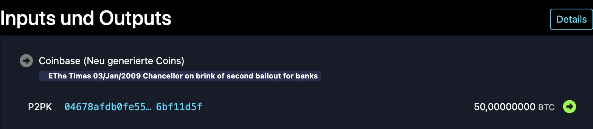
ganze Seite
Genesis Die Zeile im Rohzustand — Ausschnitt aus der Coinbase-Eingabe der ersten Transaktion überhaupt
Das führende „E" ist kein Tippfehler, sondern das Längenbyte 0x45, das der Explorer als ASCII mitausgibt. Danach folgt wörtlich der Text. Das ist die Folie: ein Screenshot der Rohdaten schlägt jede Grafik. Screenshot, mempool.space, 12.10.2026 · Detailausschnitt Originalseite öffnen ·
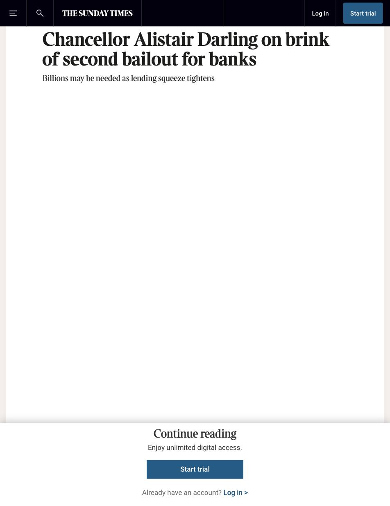
ganze Seite
Die Quelle „Chancellor Alistair Darling on brink of second bailout for banks"
The Times, 3. Januar 2009, von Francis Elliott und Gary Duncan. Unterzeile: „Billions may be needed as lending squeeze tightens". Der Text: Schatzkanzler Alistair Darling muss binnen Wochen entscheiden, ob er weitere Milliarden in die Banken pumpt, weil die 37 Milliarden Pfund Teilverstaatlichung vom Vorjahr die Kreditvergabe nicht in Gang gebracht haben. Im Gespräch sind Kapitalspritzen, billigere Staatsgarantien oder der Ankauf toxischer Papiere. Screenshot, thetimes.com, 12.10.2026 · Artikeltext hinter der Paywall, Schlagzeile und Unterzeile frei sichtbar · kein Titelbild auf der Seite hinterlegt Originalseite öffnen ·
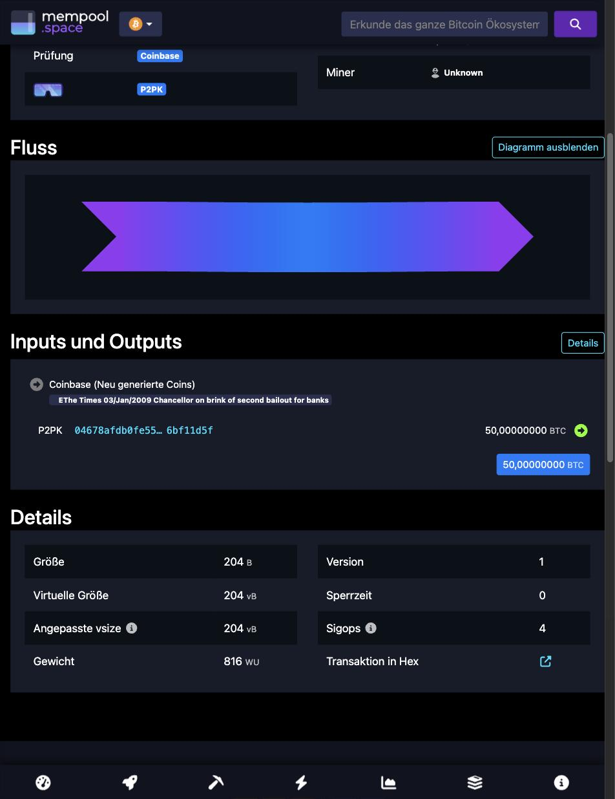
ganze Seite
Genesis Die ganze Transaktion: 4a5e1e4baab89f3a32518a88c31bc87f618f76673e2cc77ab2127b7afdeda33b
mempool.space. 204 Byte, eine einzige Coinbase-Eingabe, 50 BTC Ausgabe — die niemand je ausgeben kann, weil der Genesis-Block fest im Programmcode steht und nicht in der Datenbank der ausgabefähigen Beträge. Die 50 Bitcoin aus dem ersten Block liegen bis heute unberührt. Screenshot, mempool.space, 12.10.2026 · kein Titelbild auf der Seite hinterlegt Originalseite öffnen ·
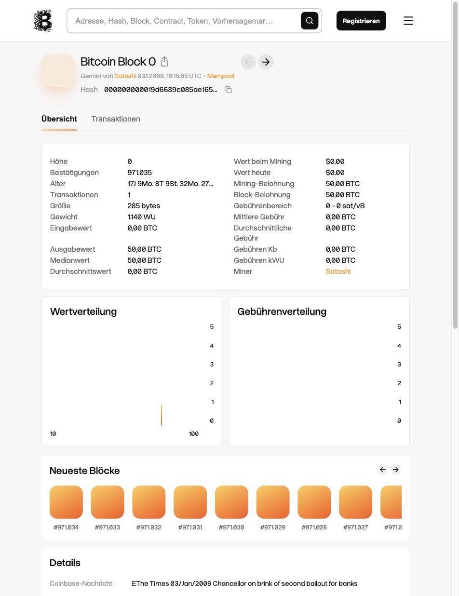
ganze Seite
Genesis Bitcoin Block 0 — „Gemint von Satoshi, 03.01.2009, 18:15:05 UTC"
Blockchain.com Explorer, zweite unabhängige Quelle für dieselbe Zeile. Ganz unten im Feld Coinbase-Nachricht steht sie wieder. Daneben die Zahl, die auf der Bühne wirkt: 971.035 Bestätigungen, Stand 12.10.2026. So oft hat das Netz diesen Block seither bestätigt. Screenshot, blockchain.com, 12.10.2026 · kein Titelbild auf der Seite hinterlegt Originalseite öffnen ·
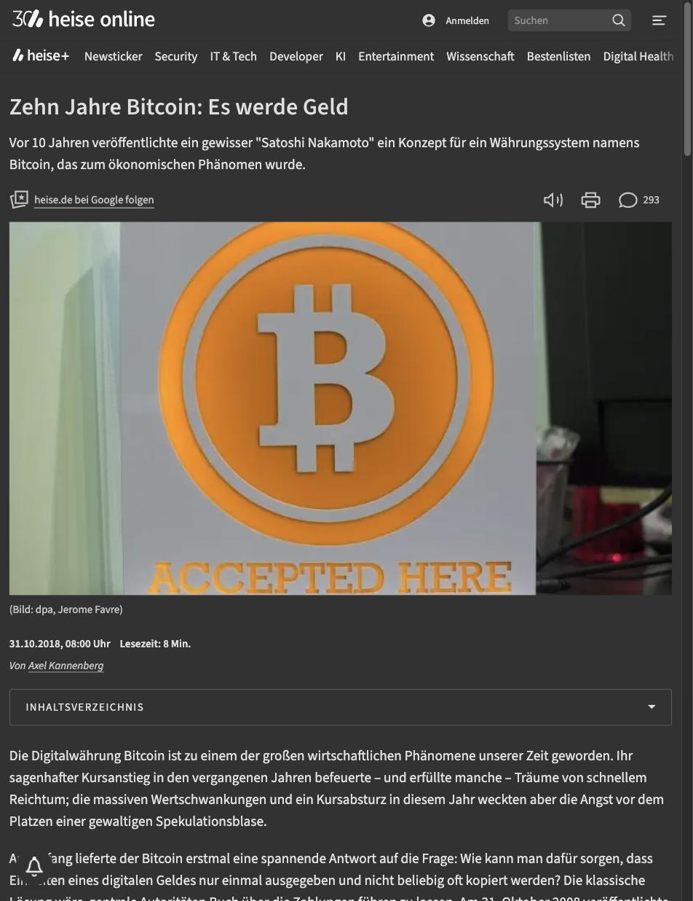
ganze Seite
Presse „Zehn Jahre Bitcoin: Es werde Geld"
heise online, 31. Oktober 2018, Axel Kannenberg, 293 Kommentare. Vorspann: „Vor 10 Jahren veröffentlichte ein gewisser ‚Satoshi Nakamoto' ein Konzept für ein Währungssystem namens Bitcoin, das zum ökonomischen Phänomen wurde." Screenshot, heise.de, 12.10.2026 · Titelbild separat Originalseite öffnen ·
Satzvorschlag: „Die erste Zeile der Bitcoin-Blockchain ist keine Zahl. Es ist eine Schlagzeile über eine Bankenrettung. Seit siebzehn Jahren lässt sie sich nicht löschen."
Warum die Zeile überhaupt dort steht: Sie ist der Beweis, dass der Block nicht vorher erzeugt wurde. Eine Schlagzeile vom selben Morgen kann niemand vordatieren. Zeitstempel und Statement in einem Satz.
Die Pointe für Engen: Bitcoin wurde nicht gegen Ihre Bank erfunden. Es wurde gegen die Rettung Ihrer Bank erfunden — bezahlt von denen, die keine Wahl hatten.
Der Bogen zum Saal: Genossenschaftsbanken brauchten damals keine Rettung. Sie können diese Folie zeigen und sagen: „Diese Schlagzeile meint nicht Sie." Das ist der stärkste Moment, den dieses Material hergibt.
Sauber bleiben: Dass Satoshi damit Bankenkritik ausdrücken wollte, ist die naheliegende Lesart, aber eine Lesart. Belegt ist nur, dass die Zeile dort steht. Den Unterschied sollte man auf einer Bühne benennen, an der Lehrbeauftragte für Digitale Ethik stehen.
Zahlungssouveränität — der vierte Baustein
Tauschmittel, Wertspeicher, Recheneinheit — und seit 2022 ein vierter: die Frage, ob jemand anderes dich abdrehen kann. Die Belege dazu.
Strang 1 — Russland 2022: der sichtbare Abschaltknopf. Die Schlagzeile sagt „abgedreht". Im Inland lief alles weiter, weil Mir seit 2015 stand.
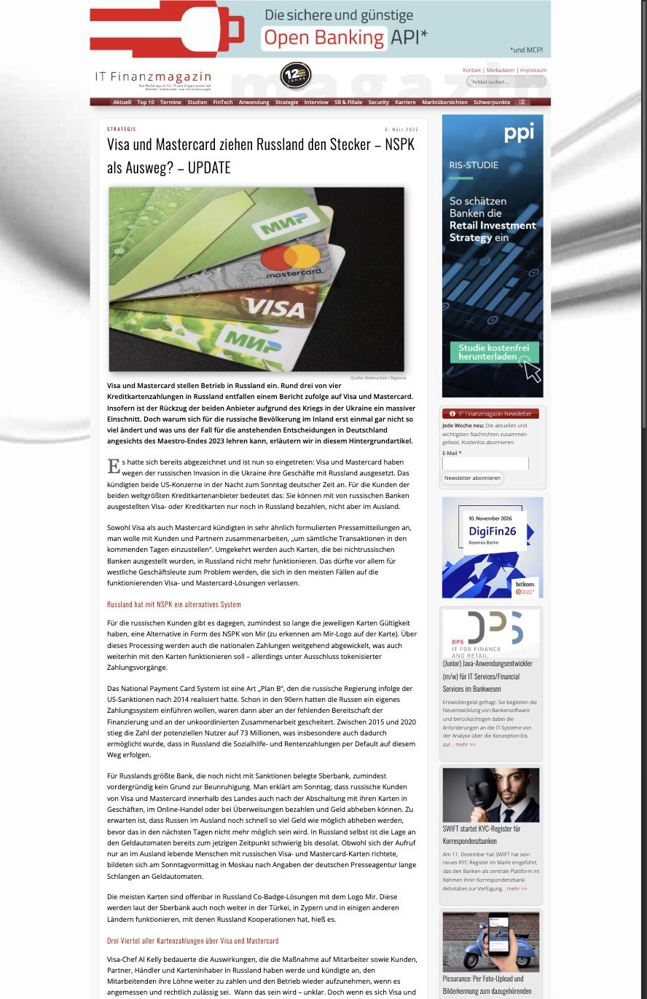
ganze Seite
Russland „Visa und Mastercard ziehen Russland den Stecker — NSPK als Ausweg?"
IT Finanzmagazin, 6. März 2022. Das Aufmacherbild liefert die Pointe von selbst: Mir, Mastercard und Visa im selben Stapel. Screenshot, it-finanzmagazin.de, 11.10.2026 · Titelbild separat als russland-abschaltung-itfinanzmagazin-titelbild.jpg Originalseite öffnen ·
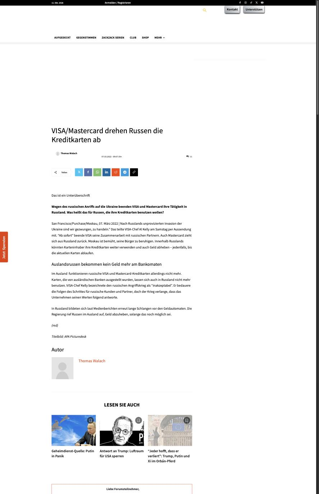
ganze Seite
Russland „VISA/Mastercard drehen Russen die Kreditkarten ab"
ZackZack, 7. März 2022. Unterzeile: „Wegen des russischen Anriffs auf die Ukraine beenden VISA und Mastercard ihre Tätigkeit in Russland. Was heißt das für Russen, die ihre Kreditkarten benutzen wollen?" Screenshot, zackzack.at, 11.10.2026 · Titelbild separat Originalseite öffnen ·
Strang 2 — Russland heute: aus der Notlösung wird Verdrängung. Nach 2022 liefen die Karten im Inland über die NSPK weiter. Vier Jahre später will die Zentralbank sie ganz loswerden.
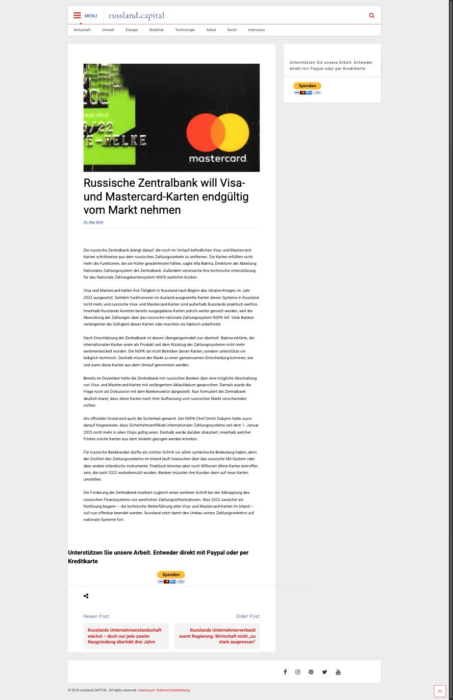
ganze Seite
Russland „Russische Zentralbank will Visa- und Mastercard-Karten endgültig vom Markt nehmen"
russland.capital, 26. Mai 2026. Mir soll Anfang 2026 über 75 Prozent aller Transaktionen abwickeln, Visa und Mastercard lagen Ende Mai bei rund 17 Prozent der Bankkarten. Screenshot, russland.capital, 11.10.2026 · kein Titelbild auf der Seite hinterlegt Originalseite öffnen ·
Strang 3 — ein europäischer Richter, abgeschaltet aus Washington. Kein Krieg, kein Sanktionsland.
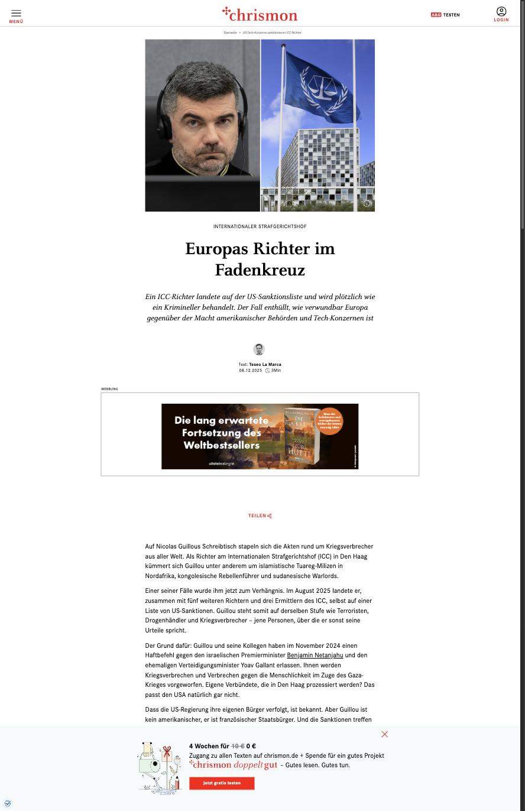
ganze Seite
IStGH „Europas Richter im Fadenkreuz", Dachzeile „Internationaler Strafgerichtshof"
chrismon, 8. Dezember 2025. Vorspann: „Ein ICC-Richter landete auf der US-Sanktionsliste und wird plötzlich wie ein Krimineller behandelt. Der Fall enthüllt, wie verwundbar Europa gegenüber der Macht amerikanischer Behörden und Tech-Konzernen ist." Screenshot, chrismon.de, 11.10.2026 · Titelbild separat Originalseite öffnen ·
Strang 4 — Brasilien: wenn ein staatliches Zahlungssystem zum Handelsstreit wird. Die Blaupause für den Streit, der dem digitalen Euro bevorsteht.
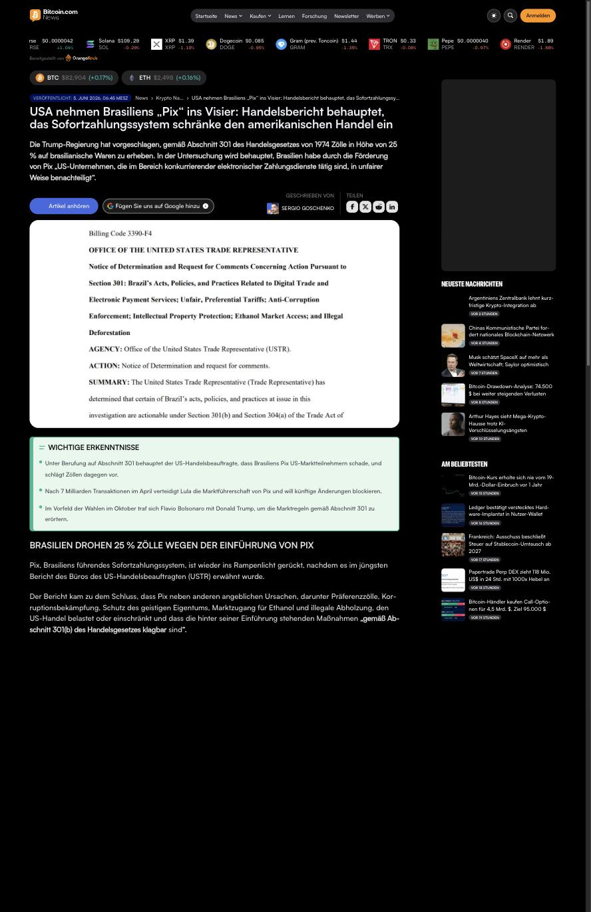
ganze Seite
Brasilien „USA nehmen Brasiliens ‚Pix' ins Visier: Handelsbericht behauptet, das Sofortzahlungssystem schränke den amerikanischen Handel ein"
Bitcoin.com News, 5. Juni 2026. Zölle von 25 Prozent nach Abschnitt 301 des Handelsgesetzes von 1974, weil Brasilien durch die Förderung von Pix „US-Unternehmen, die im Bereich konkurrierender elektronischer Zahlungsdienste tätig sind, in unfairer Weise benachteiligt" habe. Screenshot, news.bitcoin.com, 11.10.2026 · Titelbild separat Originalseite öffnen ·
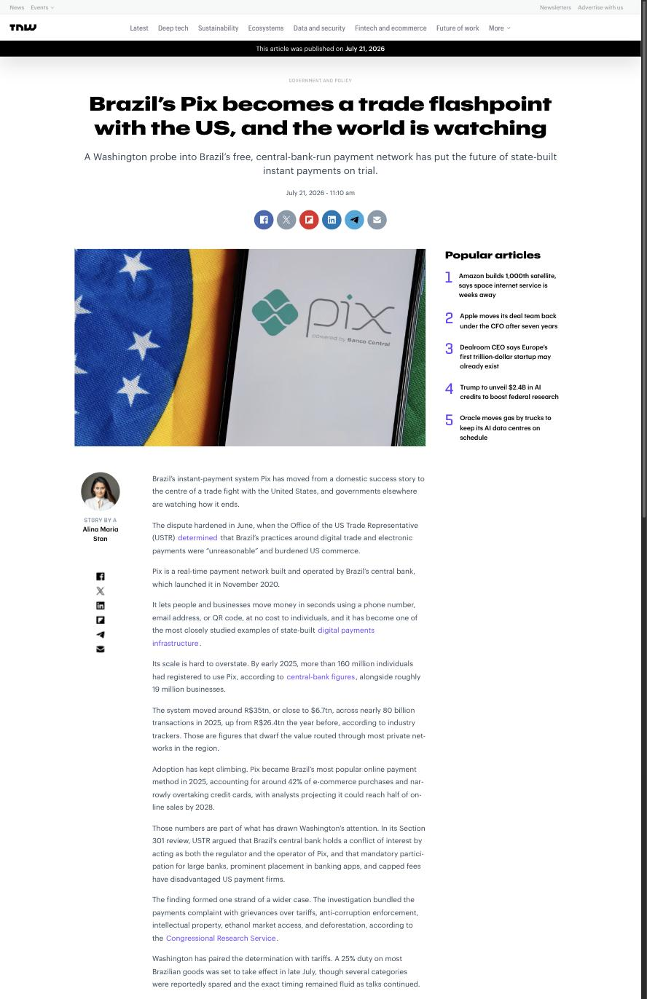
ganze Seite
Brasilien „Brazil's Pix becomes a trade flashpoint with the US, and the world is watching"
The Next Web, 21. Juli 2026. Unterzeile: „A Washington probe into Brazil's free, central-bank-run payment network has put the future of state-built instant payments on trial." Pix bewegte 2025 rund 35 Billionen Real über fast 80 Milliarden Transaktionen. Screenshot, thenextweb.com, 11.10.2026 · Titelbild separat Originalseite öffnen ·
Satzvorschlag: „Ein französischer Richter in Den Haag verliert Visa, Amazon, PayPal und Netflix. Nicht in Moskau. In Europa."
Der Dreisprung: Russland wurde abgeschaltet und hatte vorgesorgt. Ein europäischer Richter wurde abgeschaltet und hatte nichts. Brasilien hat vorgesorgt — und wird dafür mit Zöllen belegt.
Satzvorschlag: „Pix beweist, dass ein eigenes System möglich ist. Und was es kostet, eines zu haben."
Offen lassen: Die Kartensperre folgt aus den US-Sanktionsregeln für amerikanische Firmen, nicht aus einer Entscheidung von Visa oder Mastercard. Das macht es nicht besser, sondern struktureller.
Ohne Screenshot — bitte von Hand nachziehen
Blick und ZDFheute sind inzwischen aufgenommen und stehen im Kapitel „Die Richter, denen alles entzogen wurde“. Offen bleiben zwei: taz und Handelsblatt haben Consent-Overlays in einem iframe, auf den meine Klicks nicht durchkommen.
taz, 23.02.2026 — „Leben ohne Kreditkarte und Amazon“ Großes Zitat im Text: „Europa braucht mehr Souveränität, vor allem im Digitalen und im Bankenwesen.“ Und der deutsche Fall dazu: Die Göttinger Sparkasse kündigte die Bankkonten der Roten Hilfe, bei der GLS-Bank steht derselbe Verdacht im Raum.
Elf von achtzehn Richterinnen und Richtern des Internationalen Strafgerichtshofs stehen auf der Liste. Kein Verfahren, kein Urteil, keine Anklage gegen sie. Ein Dekret aus Washington — und in Europa funktioniert ihr Alltag nicht mehr. Das ist der Kern deines Souveränitätskapitels, und es ist nicht hypothetisch.
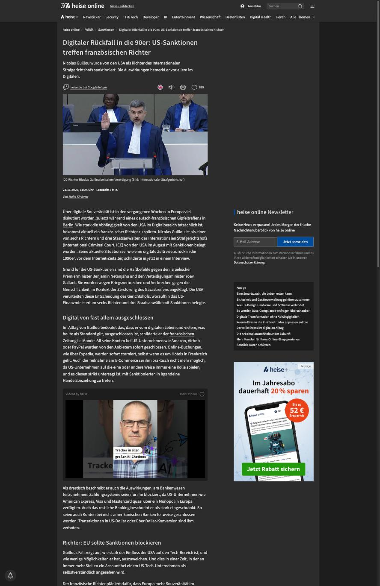
ganze Seite
IStGH „Digitaler Rückfall in die 90er: US-Sanktionen treffen französischen Richter"
heise online, 21. November 2025, Malte Kirchner, 689 Kommentare. Vorspann: „Nicolas Guillou wurde von den USA als Richter des Internationalen Strafgerichtshofs sanktioniert. Die Auswirkungen bemerkt er vor allem im Digitalen." Im Text: Zahlungssysteme seien für ihn blockiert, da American Express, Visa und Mastercard „quasi über ein Monopol in Europa" verfügten. Zwischentitel: „Richter: EU sollte Sanktionen blockieren". Screenshot, heise.de, 11.10.2026 · Titelbild separat Originalseite öffnen ·
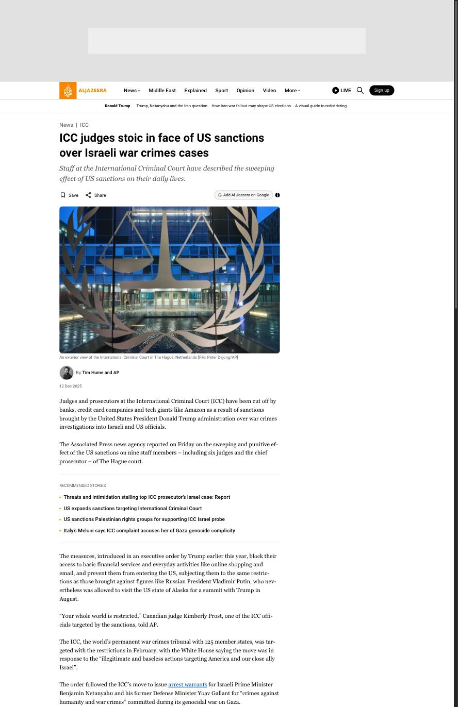
ganze Seite
IStGH „ICC judges stoic in face of US sanctions over Israeli war crimes cases"
Al Jazeera, 12. Dezember 2025, Tim Hume und AP. Der erste Satz benennt die Akteure in der Reihenfolge, die für dein Publikum zählt: Richter und Ankläger seien abgeschnitten worden „von Banken, Kreditkartenunternehmen und Tech-Konzernen wie Amazon". Die kanadische Richterin Kimberly Prost gegenüber AP: „Your whole world is restricted." Screenshot, aljazeera.com, 11.10.2026 · Titelbild separat Originalseite öffnen ·
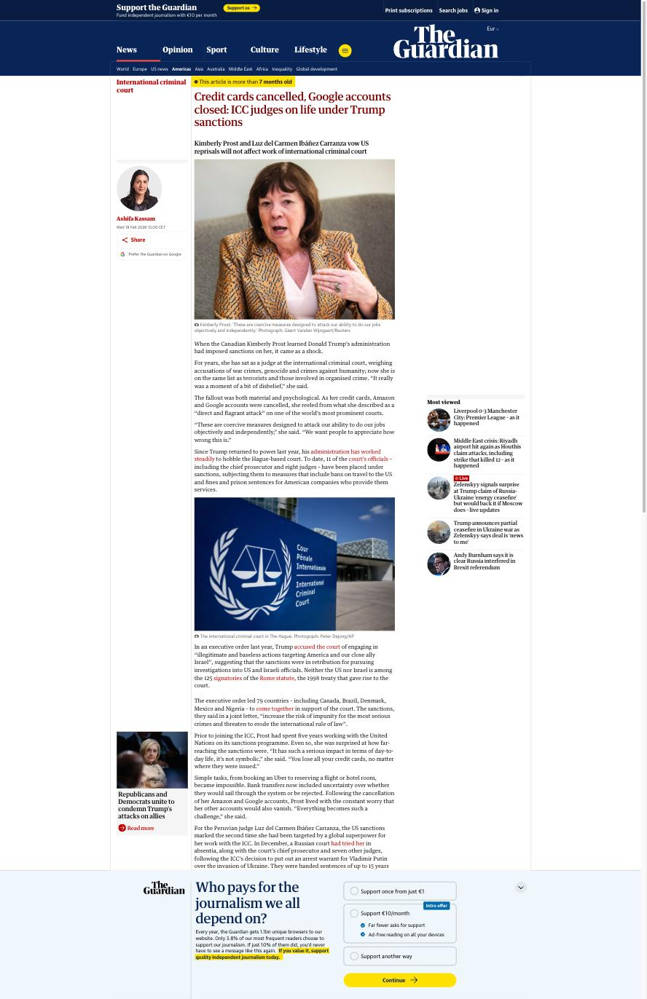
ganze Seite
IStGH „Credit cards cancelled, Google accounts closed: ICC judges on life under Trump sanctions"
The Guardian, 18. Februar 2026, Ashifa Kassam. Unterzeile: „Kimberly Prost and Luz del Carmen Ibáñez Carranza vow US reprisals will not affect work of international criminal court". Prost nennt die Maßnahmen einen „direct and flagrant attack" auf eines der prominentesten Gerichte der Welt und sagt: „These are coercive measures designed to attack our ability to do our jobs objectively and independently." Elf Angehörige des Gerichts sind gelistet, darunter der Chefankläger und acht Richter. Screenshot, theguardian.com, 11.10.2026 · Titelbild separat Originalseite öffnen ·
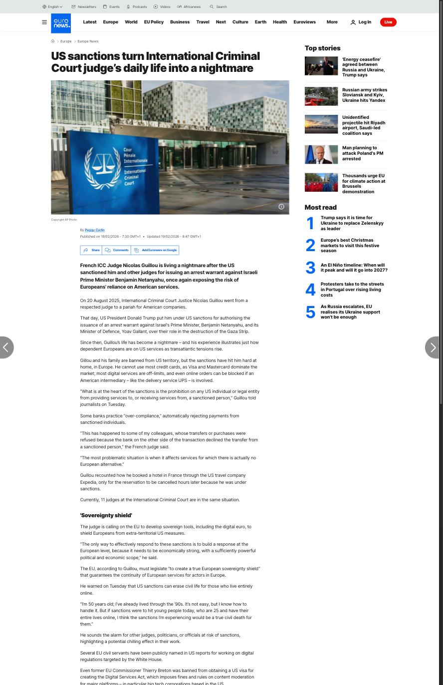
ganze Seite
IStGH „US sanctions turn International Criminal Court judge's daily life into a nightmare"
Euronews, 18. Februar 2026, Peggy Corlin. „On 20 August 2025, International Criminal Court Justice Nicolas Guillou went from a respected judge to a pariah for American companies." Hier steht der Begriff, der deinen Bankern das Rückgrat kalt macht: over-compliance — Banken lehnen Zahlungen automatisch ab, ohne dazu verpflichtet zu sein. Und Guillous Satz über die Jüngeren: Für jemanden mit 25, dessen ganzes Leben online ist, wären diese Sanktionen „a true civil death". Der Abschnitt heißt „Sovereignty shield". Screenshot, euronews.com, 11.10.2026 · kein Titelbild auf der Seite hinterlegt Originalseite öffnen ·
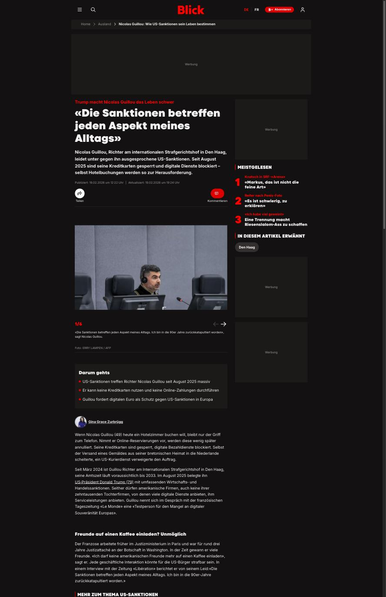
ganze Seite
IStGH «Die Sanktionen betreffen jeden Aspekt meines Alltags», Dachzeile „Trump macht Nicolas Guillou das Leben schwer"
Blick, 19. Februar 2026, Gina Grace Zurbrügg. Die Details, die auf einer Folie hängenbleiben: Hotelbuchungen nur noch telefonisch, der Versand eines Gemäldes aus seiner bretonischen Heimat scheitert am US-Kurierdienst, und: „Ich darf keine amerikanischen Freunde mehr auf einen Kaffee einladen." Gegenüber „Le Monde" nennt sich Guillou selbst eine „Testperson für den Mangel an digitaler Souveränität Europas". Im Kasten „Darum gehts" steht als dritter Punkt: Guillou fordert den digitalen Euro als Schutz. Screenshot, blick.ch, 11.10.2026 · kein Titelbild auf der Seite hinterlegt Originalseite öffnen ·
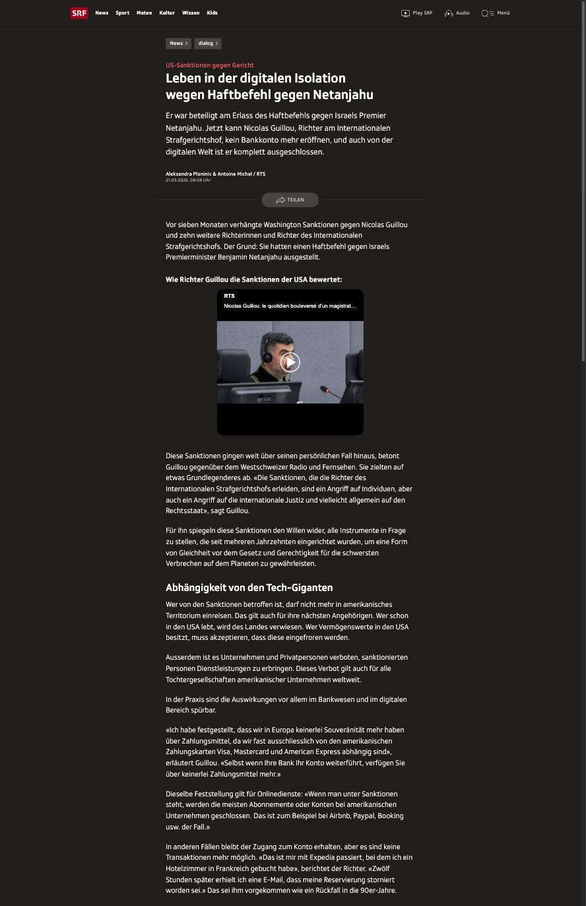
ganze Seite
IStGH „Leben in der digitalen Isolation wegen Haftbefehl gegen Netanjahu", Dachzeile „US-Sanktionen gegen Gericht"
SRF, 21. März 2026, Aleksandra Planinic & Antoine Michel / RTS. Das ist dein Zitat für die Bühne, wörtlich: «Ich habe festgestellt, dass wir in Europa keinerlei Souveränität mehr haben über Zahlungsmittel, da wir fast ausschliesslich von den amerikanischen Zahlungskarten Visa, Mastercard und American Express abhängig sind. Selbst wenn Ihre Bank Ihr Konto weiterführt, verfügen Sie über keinerlei Zahlungsmittel mehr.» Dazu die Expedia-Szene: Hotel in Frankreich gebucht, zwölf Stunden später die Stornierungsmail. Screenshot, srf.ch, 11.10.2026 · Titelbild separat Originalseite öffnen ·
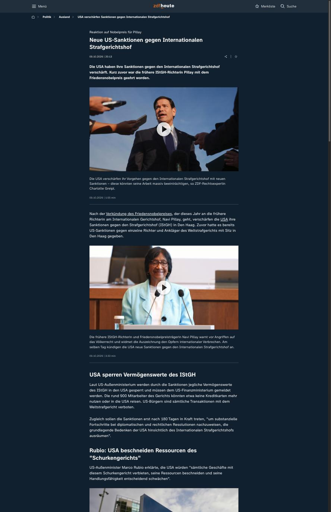
ganze Seite
IStGH „Neue US-Sanktionen gegen Internationalen Strafgerichtshof", Dachzeile „Reaktion auf Nobelpreis für Pillay"
ZDFheute, 9. Oktober 2026, 20:13 Uhr — vier Tage vor deinem Auftritt. Jetzt trifft es nicht mehr einzelne Personen, sondern das Haus: „Die rund 900 Mitarbeiter des Gerichts könnten etwa keine Kreditkarten mehr nutzen oder in die USA reisen." US-Außenminister Rubio spricht vom „Schurkengericht". Die Sanktionen treten nach 180 Tagen in Kraft. Screenshot, zdfheute.de, 11.10.2026 · Titelbild separat Originalseite öffnen ·
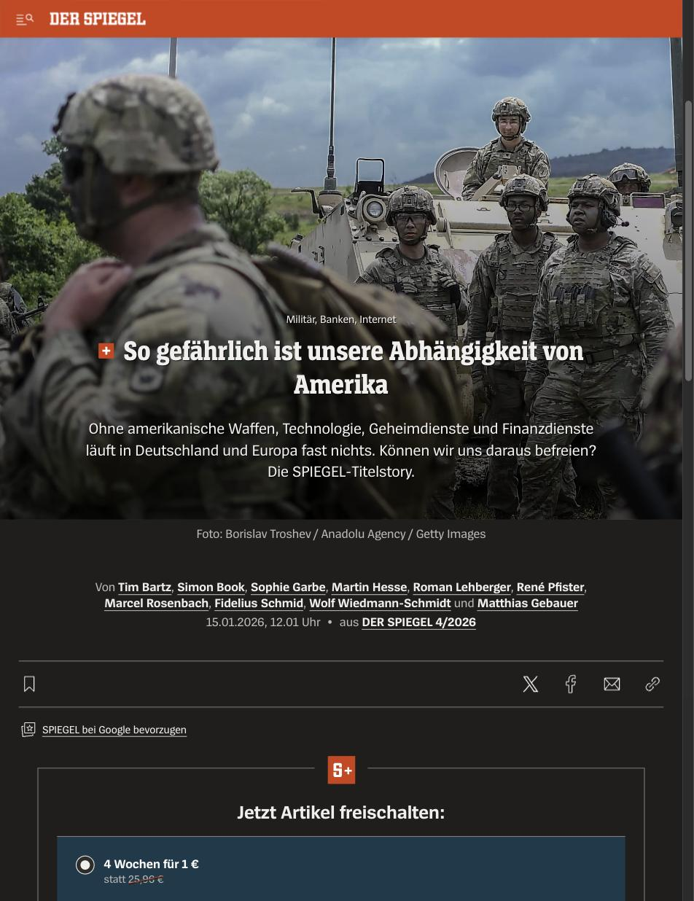
ganze Seite
SPIEGEL-Titel „So gefährlich ist unsere Abhängigkeit von Amerika“, Dachzeile „Militär, Banken, Internet“
DER SPIEGEL 4/2026, 15. Januar 2026, Titelstory von zehn Autorinnen und Autoren, 19 Minuten Lesezeit. Vorspann: „Ohne amerikanische Waffen, Technologie, Geheimdienste und Finanzdienste läuft in Deutschland und Europa fast nichts. Können wir uns daraus befreien?“ Der Fall Guillou kommt darin vor — über ihn habe ich diesen Text gefunden. Wenn du eine große deutsche Marke auf der Folie brauchst: das ist sie, und sie passt besser als jede Einzelmeldung, weil sie dein ganzes Kapitel in einer Titelzeile zusammenfasst. Screenshot, spiegel.de, 12.10.2026 · Artikeltext hinter der Paywall, Titel und Vorspann frei sichtbar · Titelbild separat Originalseite öffnen ·
Satzvorschlag, wörtlich von Guillou: „Wir haben in Europa keinerlei Souveränität mehr über Zahlungsmittel. Selbst wenn Ihre Bank Ihr Konto weiterführt, verfügen Sie über keinerlei Zahlungsmittel mehr." — Ein Richter sagt das. Über Ihr Konto.
Was konkret zugedreht wurde — belegt: Amazon, PayPal, Airbnb, Expedia, Booking, Uber, das Google-Konto und sämtliche Kreditkarten. Bei Guillou nennen heise, SRF, taz und Blick übereinstimmend Amazon, PayPal und Airbnb; Expedia storniert eine Hotelbuchung in Frankreich zwölf Stunden später. Bei Kimberly Prost kommt laut Guardian das Google-Konto dazu, Uber-Fahrten und Flug- oder Hotelbuchungen wurden unmöglich. Die taz-Schlagzeile fasst es in fünf Worten: „keine Kreditkarte, kein Amazon, kein PayPal“.
Dein Aphorismus — mit Loriot-Echo: „Ein Leben ohne Amazon ist möglich, aber sinnlos." Der Saal ergänzt Loriots Mops von selbst und lacht. Dann der Schnitt: Für einen Richter in Den Haag ist das kein Aphorismus, sondern seit August 2025 der Alltag. Variante ohne Loriot-Anleihe: „Leben ohne Amazon ist denkbar, aber sinnlos."
Der Satz, der im Saal wehtut: Nicht Washington hat seine Visa-Karte gesperrt. Seine französische Bank hat es getan. Niemand hat sie gezwungen. Das heißt over-compliance, und es ist die Entscheidung einer europäischen Bank.
Die Eskalation in drei Daten: August 2025 elf Personen. Dezember 2025 bestätigen Banken, Kartenfirmen und Amazon die Wirkung. 9. Oktober 2026 das ganze Gericht, rund 900 Mitarbeiter.
Was Guillou selbst fordert: den digitalen Euro und eine scharfe EU-Blocking-Verordnung. Dein Gedankenexperiment 3 hat damit einen Fürsprecher, den niemand im Saal für einen Spinner halten kann.
Recherchehinweis — gezielt nachgesucht am 12.10.2026:Spiegel hat den Fall nicht als Einzelmeldung, aber in der Titelstory 4/2026 oben. tagesschau führt zu „Guillou“ keinen Treffer; zum Thema gibt es nur ein ARD-Video vom 19.08.2026 über den US-Druck auf den Strafgerichtshof und einen Audiobeitrag vom 09.10.2026 zur Sorge der EU-Kommission. Bei FAZ und Süddeutscher liefert die Suche über die vergangenen zwölf Monate keinen Treffer zu Guillou oder zu den Zahlungsproblemen der Richter — die FAZ hat nur den Nobelpreis für Pillay (09.10.2026). Ältere FAZ-Texte ließen sich nur im kostenpflichtigen F.A.Z.-Archiv prüfen.
Wero — wird das was?
Die ehrliche Lage vier Monate vor deinem Auftritt. Die Technik läuft. Die Händler fehlen. Jede der vier Redaktionen kommt unabhängig zum selben Befund.
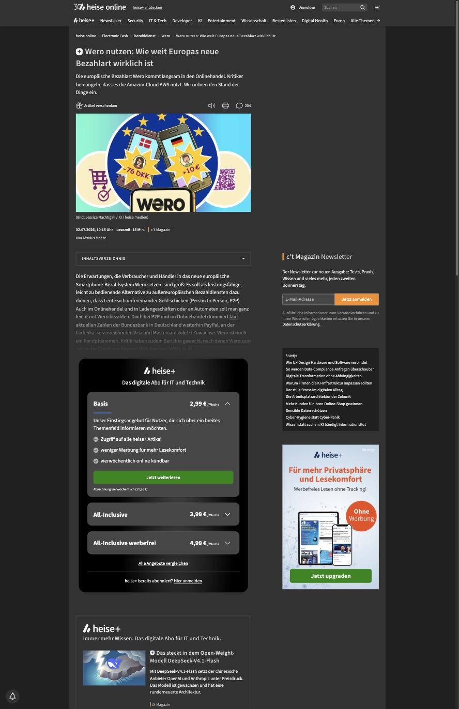
ganze Seite
Wero „Wero nutzen: Wie weit Europas neue Bezahlart wirklich ist"
heise online / c't, 2. Juli 2026. Vorspann: „Die europäische Bezahlart Wero kommt langsam in den Onlinehandel. Kritiker bemängeln, dass sie die Amazon-Cloud AWS nutzt." Screenshot, heise.de, 11.10.2026 · Titelbild separat Originalseite öffnen ·
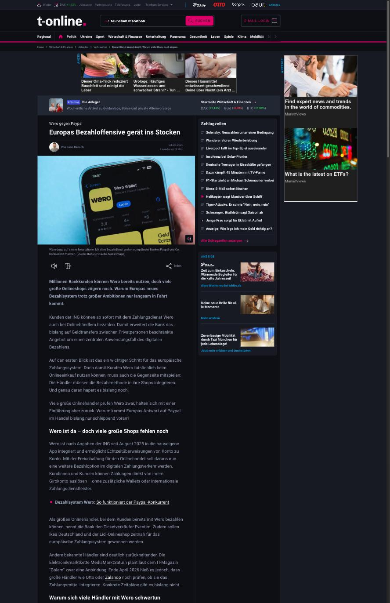
ganze Seite
Wero „Europas Bezahloffensive gerät ins Stocken", Dachzeile „Wero gegen Paypal"
t-online, 4. Juni 2026. Zwischentitel: „Wero ist da — doch viele große Shops fehlen noch". Rewe hat nach Prüfung abgesagt, Otto und Zalando prüfen, MediaMarktSaturn ohne Termin. Screenshot, t-online.de, 11.10.2026 · Titelbild separat Originalseite öffnen ·
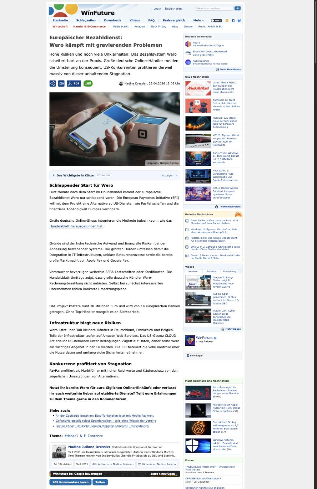
ganze Seite
Wero „Europäischer Bezahldienst: Wero kämpft mit gravierenden Problemen"
WinFuture, 25. April 2026. Vorspann: „Hohe Risiken und noch viele Unklarheiten: Das Bezahlsystem Wero scheitert hart an der Praxis." Das Projekt kostete rund 38 Millionen Euro und wird von 14 europäischen Banken getragen. Screenshot, winfuture.de, 11.10.2026 · Titelbild separat Originalseite öffnen ·
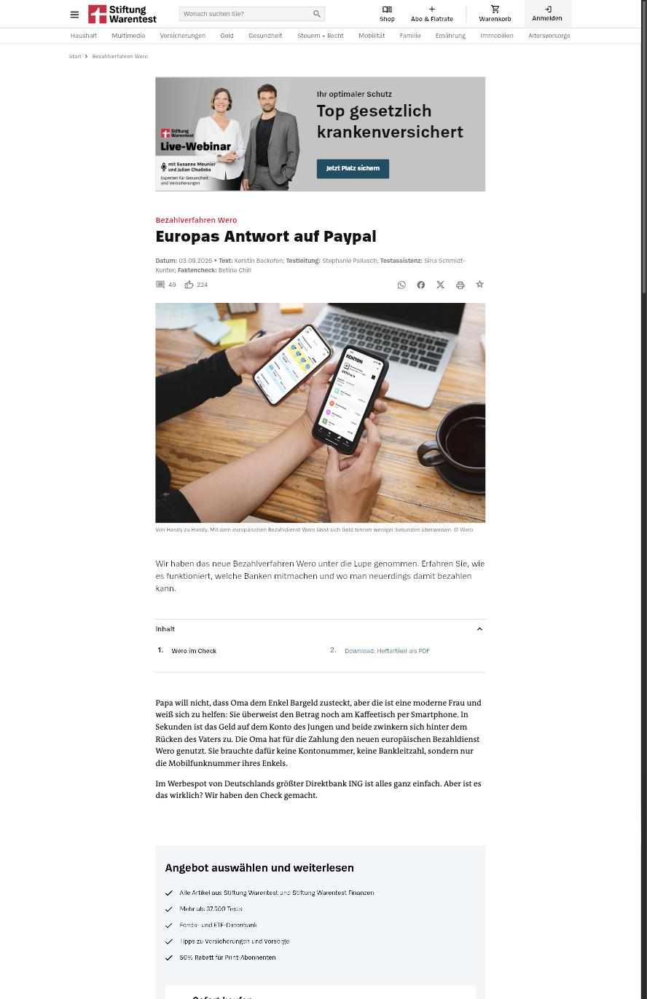
ganze Seite
Wero „Europas Antwort auf Paypal", Dachzeile „Bezahlverfahren Wero"
Stiftung Warentest, 3. September 2026. Die Einstiegsszene ist deine Bühnenszene: Oma überweist dem Enkel am Kaffeetisch, ohne Kontonummer, nur über die Handynummer. „Aber ist es das wirklich? Wir haben den Check gemacht." Screenshot, test.de, 11.10.2026 · Titelbild separat Originalseite öffnen ·
Satzvorschlag: „Wero funktioniert. Das ist nicht das Problem. Das Problem ist, dass Rewe nein gesagt hat."
Die Zahl, die alles entscheidet: 39 Prozent Bekanntheit in Deutschland, Juli 2026. Ein Zahlungssystem, das 61 Prozent nicht kennen, ist kein Zahlungssystem. Es ist ein Angebot.
Der Vorwurf, der im Saal sitzt: Teile der Infrastruktur laufen auf Amazon Web Services. Das europäische Gegenmodell mietet beim amerikanischen Anbieter. Sag es selbst, bevor es jemand anderes tut.
Was dafür spricht: rund 0,77 Prozent Gebühr statt Kreditkarten- oder PayPal-Sätze. Eventim, Decathlon und Lidl sind dabei. NFC an der Kasse kommt 2027.
Vereint Wero PayPal und Apple Pay? Nein — Stand 12.10.2026
Wero hat heute das P2P-Stück von PayPal und baut den Online-Checkout aus.
Apple Pays Kernfunktion — das Antippen an der Ladenkasse — fehlt bis 2027. Und der größte
PayPal-Vorteil fehlt ganz.
Geld an Privatpersonen senden
✓ vorhanden — der Startfunktion seit Juli 2024, über Handynummer oder E-Mail, in Sekunden von Konto zu Konto
Bezahlen im Onlineshop
teilweise — technisch da, aber die großen Händler fehlen. Rewe hat abgesagt, Otto und Zalando prüfen noch
Abos und wiederkehrende Zahlungen
für 2026 angekündigt, Beispiel Netflix
Ratenzahlung (BNPL)
für Q4 2026 angekündigt
Käuferschutz
✗ fehlt — genau das, wofür die meisten PayPal überhaupt nutzen
Guthabenkonto / Wallet-Saldo
✗ gibt es nicht. Wero bucht direkt vom Girokonto, kein Zwischenspeicher
Antippen an der Ladenkasse (NFC)
✗ erst 2027 — so EPI-Mann Chris Scheuermann im Interview vom 30.03.2026. Davor soll QR-Code am POS kommen, ein Termin dafür wurde bereits einmal verschoben
Außerhalb des Euroraums
✗ nein. PayPal und Apple Pay funktionieren weltweit
Der Unterschied, den die Frage eigentlich meint: Apple Pay und Wero sind nicht dasselbe mit anderem Logo. Apple Pay ist eine Hülle über den Kartenschienen — Visa und Mastercard verdienen weiter mit, Apple nimmt seinen Anteil obendrauf. Wero ersetzt die Schiene: Konto zu Konto über SEPA Instant, ohne Karte dazwischen.
Satzvorschlag: „Apple Pay legt sich über die Kartenschiene. Wero ersetzt sie. Deshalb ist Wero kein Produkt. Wero ist ein Angriff auf eine Infrastruktur."
Was du nicht behaupten solltest: dass Wero PayPal heute ersetzen kann. Ohne Käuferschutz und ohne große Händler ist es für den Verbraucher kein Tausch, sondern ein Verzicht. Das weiß im Saal jeder, der es selbst probiert hat.
Die Pointe, die bleibt: Die fehlende NFC-Funktion ist kein technisches Problem mehr. Apple musste die Schnittstelle öffnen, und die Volksbanken waren die Ersten, die sie genutzt haben. Der Weg für Wero an die Kasse ist frei — ausgerechnet durch Ihr Haus.
Stand 12.10.2026. Quellen: heise (02.07.2026), t-online (04.06.2026), WinFuture (25.04.2026), Stiftung Warentest (03.09.2026), EPI-Roadmap-Berichte September 2026. Die Termine für QR-Code am POS, Abos, BNPL und NFC stammen aus Roadmap-Berichten Dritter, nicht aus einer EPI-Zusage — vor der Bühne nicht als fixe Zusage verkaufen.
Wero-Roadmap und die NFC-Pläne 2027
Die Primärquelle steht ganz unten in diesem Abschnitt — ein Interview mit EPI-Mann Chris Scheuermann. Alles andere zitiert ihn. Und es gibt einen Widerspruch bei den Terminen, den du kennen solltest, bevor ihn jemand im Publikum kennt.
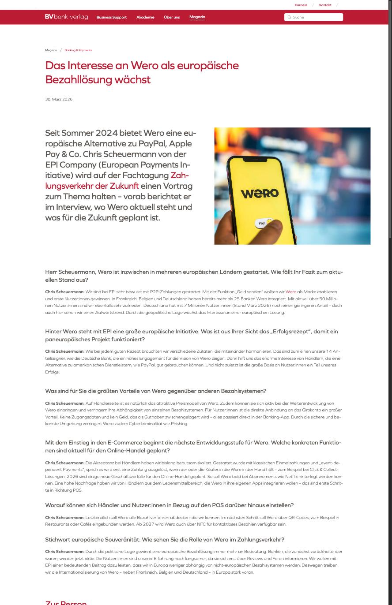
ganze Seite
Primärquelle „Das Interesse an Wero als europäische Bezahllösung wächst" — Interview mit Chris Scheuermann, EPI Company
Bank-Verlag, 30. März 2026. Der Satz, auf den sich alle anderen berufen, wörtlich: „Im nächsten Schritt soll Wero über QR-Codes, zum Beispiel in Restaurants oder Cafés eingebunden werden. Ab 2027 wird Wero auch über NFC für kontaktloses Bezahlen verfügbar sein." Dazu die Zahlen aus erster Hand: über 50 Millionen Nutzer europaweit, aber nur 7 Millionen in Deutschland (Stand März 2026), mehr als 25 Banken in Frankreich, Belgien und Deutschland. Und die Zielmarke: „Letztendlich soll Wero alle Bezahlverfahren abdecken, die wir kennen." Screenshot, bank-verlag.de, 12.10.2026 · kein Titelbild auf der Seite hinterlegt Originalseite öffnen ·
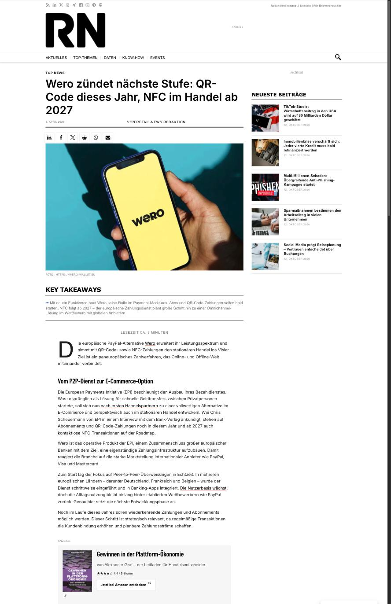
ganze Seite
Roadmap „Wero zündet nächste Stufe: QR-Code dieses Jahr, NFC im Handel ab 2027"
Retail News, 2. April 2026. Der Artikel hat oben einen Kasten „Key Takeaways", der sich als Folie fast selbst baut: Abos und QR-Code-Zahlungen sollen starten, NFC folgt ab 2027, Ziel ist eine Omnichannel-Lösung im Wettbewerb mit PayPal, Visa und Mastercard. Screenshot, retail-news.de, 12.10.2026 · Titelbild separat Originalseite öffnen ·
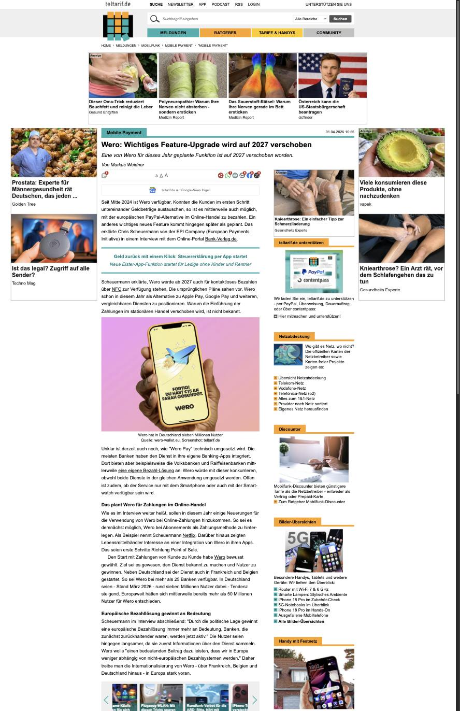
ganze Seite
Verschiebung „Wero: Wichtiges Feature-Upgrade wird auf 2027 verschoben"
teltarif.de, 1. April 2026, Markus Weidner. Die ehrliche Version derselben Nachricht: „Die ursprünglichen Pläne sahen vor, Wero schon in diesem Jahr als Alternative zu Apple Pay, Google Pay und weiteren, vergleichbaren Diensten zu positionieren. Warum die Einführung der Zahlungen im stationären Handel verschoben wird, ist nicht bekannt." Und ein Satz, der direkt deinen Saal meint: Die meisten Banken haben Wero in ihre eigene Banking-App integriert — „dort bieten aber beispielsweise die Volksbanken und Raiffeisenbanken mittlerweile eine eigene Bezahl-Lösung an". Screenshot, teltarif.de, 12.10.2026 · Titelbild separat Originalseite öffnen ·
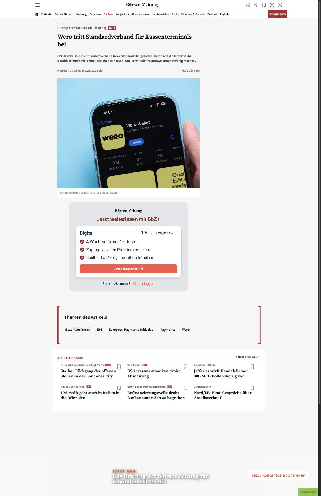
ganze Seite
Neueste Meldung „Wero tritt Standardverband für Kassenterminals bei", Dachzeile „Europäische Bezahllösung"
Börsen-Zeitung, 8. Oktober 2026, Franz Công Bùi — vier Tage vor deinem Vortrag. Vorspann: „EPI ist dem Brüsseler Standardverband Nexo-Standards beigetreten. Damit will die Initiative ihr Bezahlverfahren Wero über bestehende Kassen- und Terminalinfrastruktur annahmefähig machen." Das ist die unspektakuläre, aber entscheidende Vorarbeit: ohne Terminalstandard kein Bezahlen an der Kasse. Screenshot, boersen-zeitung.de, 12.10.2026 · Artikeltext hinter der Paywall, Titel und Vorspann frei sichtbar · Titelbild separat Originalseite öffnen ·
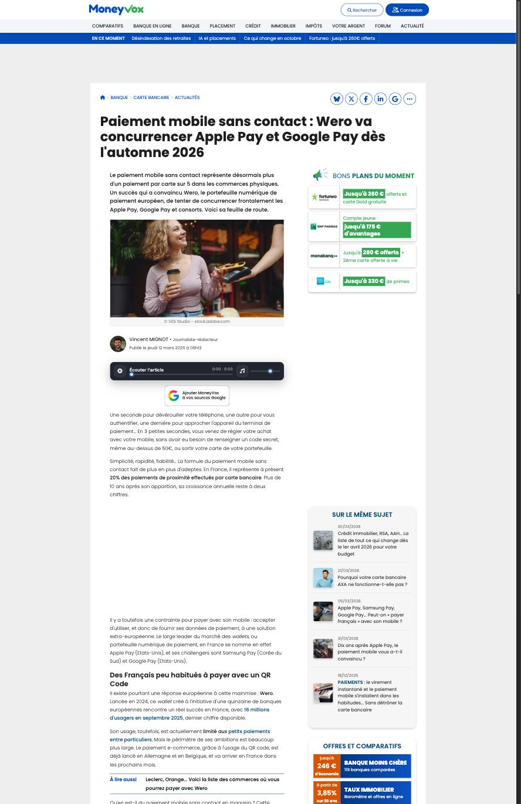
ganze Seite
Widerspruch „Paiement mobile sans contact : Wero va concurrencer Apple Pay et Google Pay dès l'automne 2026"
MoneyVox, 12. März 2026, Vincent Mignot. Die französische Lesart weicht ab: NFC schon ab Herbst 2026 — allerdings in der ersten Stufe auf Basis der Kreditkarte, nicht per SEPA-Echtzeitüberweisung. Man müsste also erst seine Karte in die Wallet legen. Erst später, Richtung Ende 2027, soll NFC direkt über die Überweisung laufen. Nebenbei die Zahl für Frankreich: 16 Millionen Nutzer im September 2025. Screenshot, moneyvox.fr, 12.10.2026 · Titelbild separat Originalseite öffnen ·
Der Widerspruch, kurz: Deutsche Quellen sagen NFC ab 2027, die französische sagt Herbst 2026 — aber kartenbasiert. Beides kann stimmen, weil es zwei verschiedene Dinge sind: NFC auf der Kartenschiene ist nur eine neue Hülle, NFC auf der Überweisung ist der eigentliche Bruch. Sag auf der Bühne „ab 2027", das ist die konsistente Angabe und steht im Originalinterview.
Die Zahl, die du korrigieren solltest: Die 50 bis 60 Millionen sind europaweit. In Deutschland sind es 7 Millionen (Scheuermann, März 2026), in Frankreich allein 16 Millionen. Der deutsche Markt ist der schwächste der drei Startländer — in einem Saal voller deutscher Genossenschaftsbanker ist das die relevantere Zahl.
Satzvorschlag: „Wero kann heute Geld zwischen Freunden schicken. An der Kasse kann es gar nichts. Der Termin dafür wurde schon einmal verschoben, und niemand hat gesagt, warum."
Was wirklich neu ist: Seit vier Tagen ist EPI Mitglied im Terminal-Standardverband Nexo. Unspektakulär, aber ohne das gibt es kein Bezahlen an einer bestehenden Kasse. Das ist die Meldung, die zeigt, dass es diesmal ernst wird.
Und der Heimvorteil, den teltarif beiläufig nennt: Volks- und Raiffeisenbanken bieten in ihrer App bereits eine eigene Bezahllösung an — die Girocard direkt auf dem iPhone. Wero und die eigene Lösung konkurrieren damit in derselben App. Das ist ein offener Punkt, kein Triumph, und ehrlicher, wenn du ihn selbst ansprichst.
Stand 12.10.2026. Primärquelle für „ab 2027" ist das Bank-Verlag-Interview mit Chris Scheuermann vom 30.03.2026. Eine offizielle EPI-Mitteilung mit einem festen NFC-Starttermin habe ich nicht gefunden.
Der digitale Euro und seine Gegner
Vier Lager, vier Motive. Die Banken fürchten ums Geschäft, die Datenschützer um die Spur, die Liberalen um das Prinzip, die USA um den Dollar. Für dein Publikum zählt das erste.
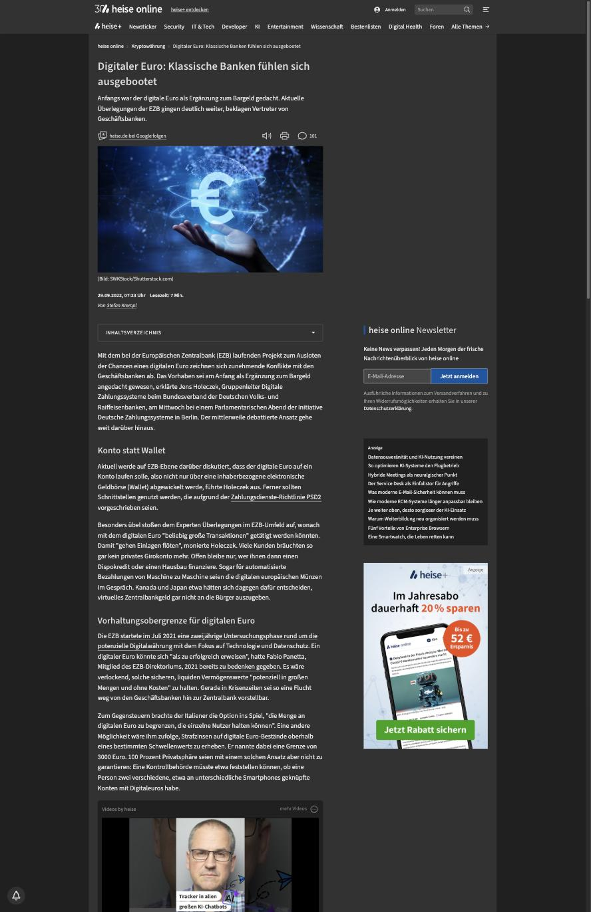
ganze Seite
Digitaler Euro „Digitaler Euro: Klassische Banken fühlen sich ausgebootet"
heise online, 29. September 2022. Der Mann, der dort zitiert wird, ist einer von euch: Jens Holeczek, Gruppenleiter Digitale Zahlungssysteme beim Bundesverband der Deutschen Volks- und Raiffeisenbanken. Sein Einwand im Original: Wenn „beliebig große Transaktionen" getätigt werden könnten, „gehen Einlagen flöten" — viele Kunden bräuchten dann gar kein privates Girokonto mehr. Screenshot, heise.de, 11.10.2026 · Titelbild separat Originalseite öffnen ·
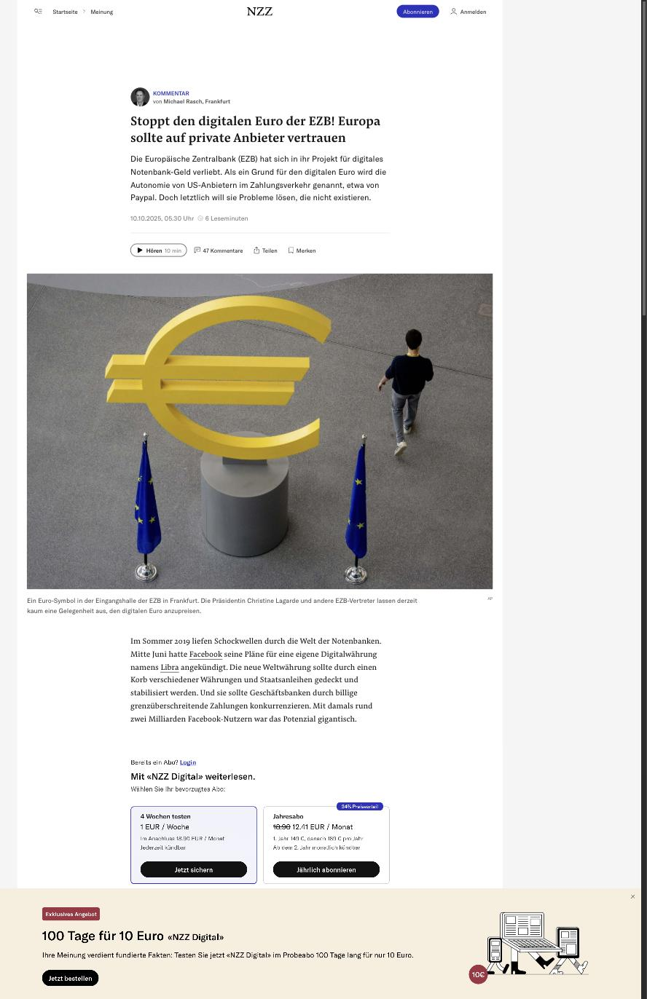
ganze Seite
Digitaler Euro „Stoppt den digitalen Euro der EZB! Europa sollte auf private Anbieter vertrauen", Kommentar von Michael Rasch
NZZ, 10. Oktober 2025. Vorspann: „Die Europäische Zentralbank hat sich in ihr Projekt für digitales Notenbank-Geld verliebt. Als ein Grund für den digitalen Euro wird die Autonomie von US-Anbietern im Zahlungsverkehr genannt, etwa von Paypal. Doch letztlich will sie Probleme lösen, die nicht existieren." Der Text beginnt mit Libra — die Brücke zum nächsten Kapitel liegt auf der Seite selbst. Screenshot, nzz.ch, 11.10.2026 · Titelbild separat Originalseite öffnen ·
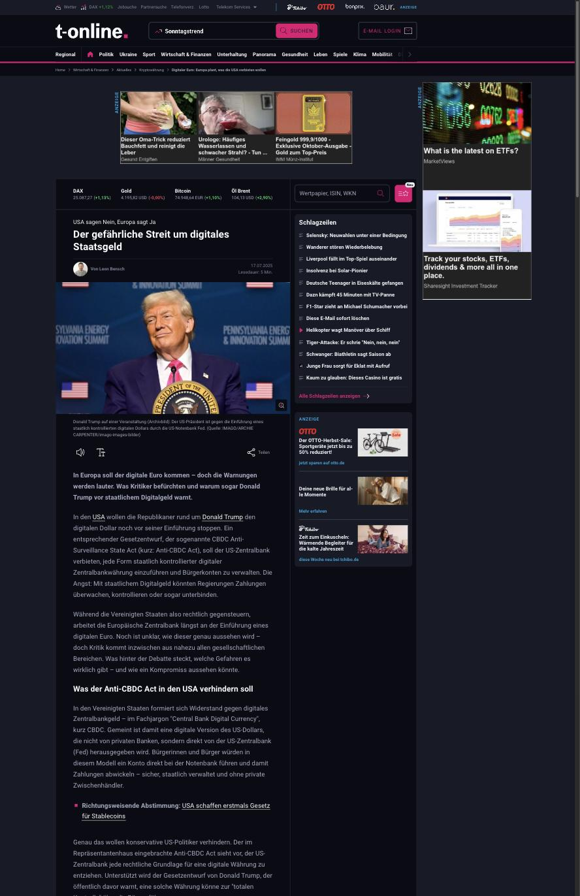
ganze Seite
Digitaler Euro „Der gefährliche Streit um digitales Staatsgeld", Dachzeile „USA sagen Nein, Europa sagt Ja"
t-online, 17. Juli 2025. Während die EZB den digitalen Euro baut, verbietet der US-Kongress ihn per Gesetz: Der Anti-CBDC Surveillance State Act untersagt der Fed jede Form staatlich kontrollierter digitaler Zentralbankwährung. Screenshot, t-online.de, 11.10.2026 · Titelbild separat Originalseite öffnen ·
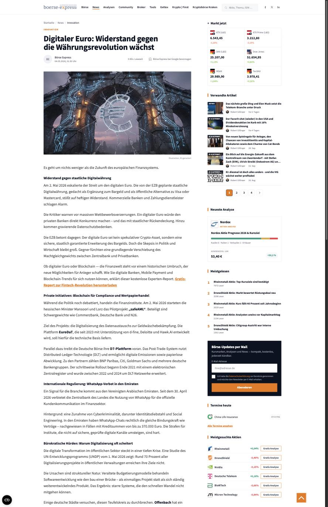
ganze Seite
Digitaler Euro „Digitaler Euro: Widerstand gegen die Währungsrevolution wächst"
Börse Express, 4. Mai 2026. „Am 2. Mai 2026 eskalierte der Streit um den digitalen Euro." Kommerzielle Banken und Zahlungsdienstleister schlagen Alarm, die Kritiker warnen vor Wettbewerbsverzerrung durch staatliche Rückendeckung. Screenshot, boerse-express.com, 11.10.2026 · Titelbild separat Originalseite öffnen ·
Satzvorschlag: „Der schärfste Gegner des digitalen Euro sitzt nicht in Washington. Er sitzt in diesem Saal."
Der Kern des Streits: Konto statt Wallet. Wenn der digitale Euro als Konto bei der Zentralbank läuft, braucht niemand mehr ein Girokonto. Deshalb die Obergrenze von 3.000 Euro. Sie ist kein Verbraucherschutz. Sie ist Bankenschutz.
Die Kostenseite: rund 1,3 Milliarden Euro bis 2029, Pilot 2027. Volker Wieland nennt das Projekt im Bundestag „eine Lösung auf der Suche nach einem Problem".
Was du gerade rücken solltest: Die EZB verspricht Offline-Zahlungen ohne Internet und ohne Zinsen. Ein Sozialkreditsystem ist weder rechtlich noch technisch angelegt. Wer das behauptet, hat die Lagarde-Zitate aus einem manipulierten Video.
Die Facebook-Währung wurde abgedreht
Zwei Milliarden Nutzer, eine eigene Währung, zweieinhalb Jahre Lebensdauer. Libra wurde im Juni 2019 vorgestellt und am 31. Januar 2022 für 182 Millionen Dollar verkauft. Kein Gericht hat es verboten. Es reichte, dass die Regulierer nicht nickten.
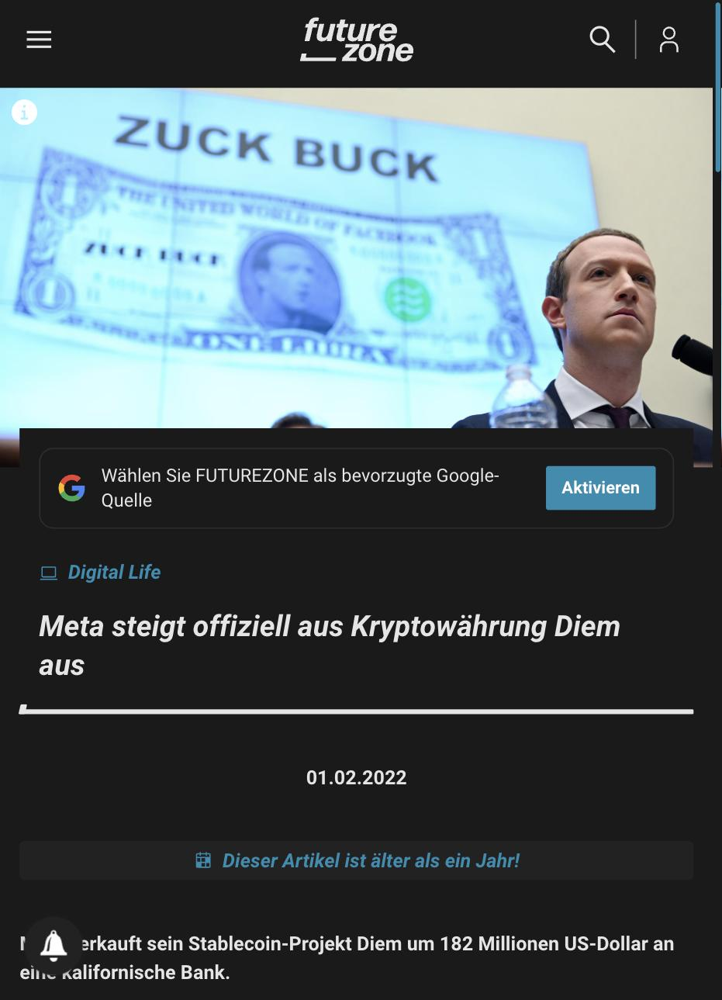
ganze Seite
Libra / Diem „Meta steigt offiziell aus Kryptowährung Diem aus"
futurezone, 1. Februar 2022. Das Aufmacherbild ist die Folie: Zuckerberg im Kongress, hinter ihm auf der Leinwand ein Dollarschein mit seinem eigenen Gesicht und der Aufschrift ZUCK BUCK — THE UNITED WORLD OF FACEBOOK. Screenshot, futurezone.at, 11.10.2026 · Titelbild separat Originalseite öffnen ·
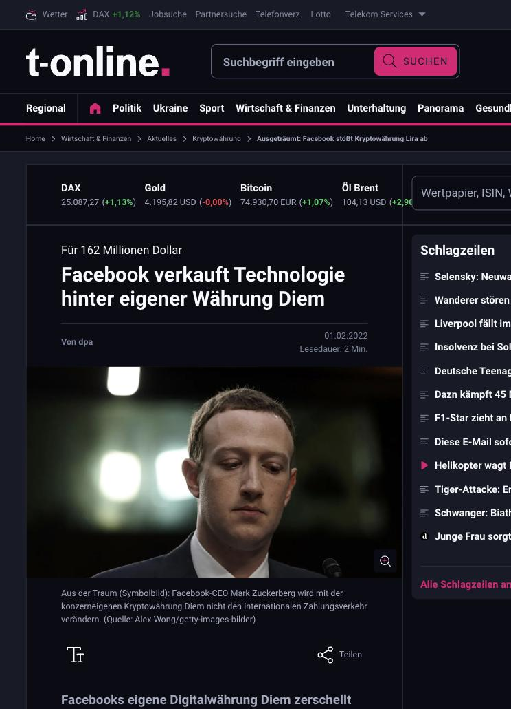
ganze Seite
Libra / Diem „Facebook verkauft Technologie hinter eigener Währung Diem", Dachzeile „Für 162 Millionen Dollar"
t-online / dpa, 1. Februar 2022. Vorspann: „Facebooks eigene Digitalwährung Diem zerschellt am Widerstand der Regulierer, ehemalige Partner wie Visa und Co. sind schon lange abgesprungen." Screenshot, t-online.de, 11.10.2026 · Titelbild separat Originalseite öffnen ·
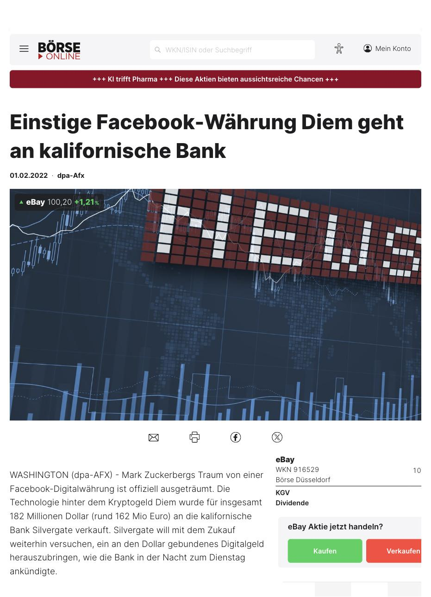
ganze Seite
Libra / Diem „Einstige Facebook-Währung Diem geht an kalifornische Bank"
Börse Online / dpa-AFX, 1. Februar 2022. 182 Millionen Dollar für die Technologie: 50 Millionen in bar, der Rest in gut 1,2 Millionen Silvergate-Aktien. Screenshot, boerse-online.de, 11.10.2026 · kein Titelbild auf der Seite hinterlegt Originalseite öffnen ·
Satzvorschlag: „Zwei Milliarden Nutzer waren zu wenig. Das ist die beruhigendste Nachricht für diesen Saal — und die beunruhigendste."
Die Reihenfolge des Abgangs: Juni 2019 vorgestellt. Herbst 2019 springen Visa, Mastercard, PayPal und eBay ab. Dezember 2020 Umbenennung in Diem. Januar 2022 Verkauf. Der Widerstand der Fed wurde nie überwunden.
Was danach kam: Silvergate, der Käufer, ging selbst unter. Die Idee nicht — sie heißt heute Stablecoin und braucht kein Facebook mehr.
Die Lehre für Engen: Reguliertes Geld hat gewonnen. Einmal. Gegen einen Konzern, der um Erlaubnis gefragt hat. Tether fragt nicht.
WeChat und Alipay — bezahlen ist dort nur ein Feature
Das fertige Endspiel, seit zehn Jahren im Betrieb. In China ist die Zahlung kein eigenes Produkt mehr, sondern eine Funktion in der App, in der ohnehin alles passiert. Wer das Bild sucht, wie eine Bank aus der Kundenbeziehung verschwindet: hier ist es.
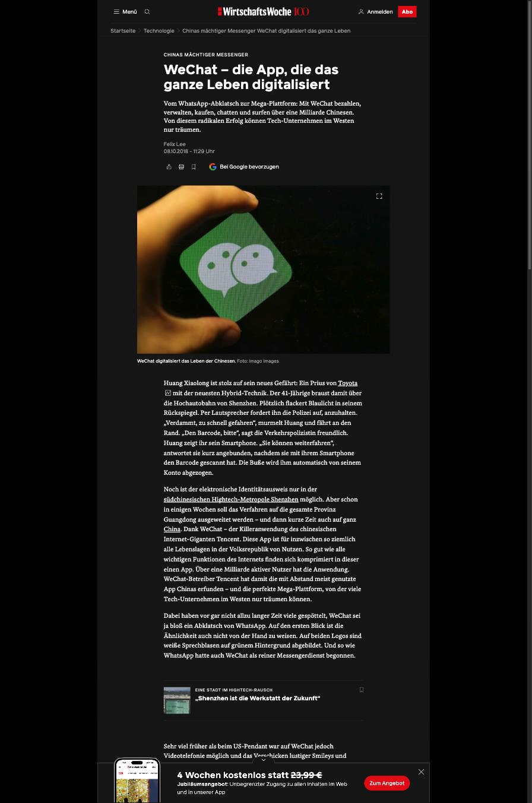
ganze Seite
Super-App „WeChat — die App, die das ganze Leben digitalisiert", Dachzeile „Chinas mächtiger Messenger"
WirtschaftsWoche, 8. Oktober 2018. Vorspann: „Vom WhatsApp-Abklatsch zur Mega-Plattform: Mit WeChat bezahlen, verwalten, kaufen, chatten und surfen über eine Milliarde Chinesen." Die Eingangsszene: Verkehrskontrolle auf der Hochautobahn, die Polizistin scannt den Barcode am Handy, die Buße wird automatisch abgebucht. Screenshot, wiwo.de, 11.10.2026 · Titelbild separat Originalseite öffnen ·
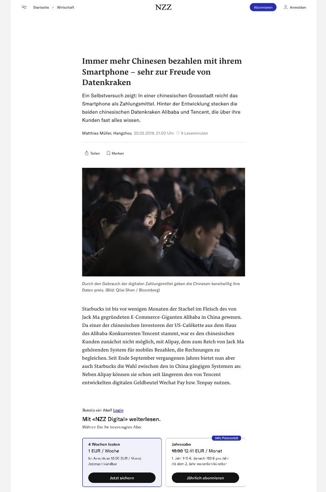
ganze Seite
Super-App „Immer mehr Chinesen bezahlen mit ihrem Smartphone — sehr zur Freude von Datenkraken"
NZZ, 20. Februar 2018, Selbstversuch aus Hangzhou. Vorspann: „In einer chinesischen Grossstadt reicht das Smartphone als Zahlungsmittel. Hinter der Entwicklung stecken die beiden chinesischen Datenkraken Alibaba und Tencent, die über ihre Kunden fast alles wissen." Screenshot, nzz.ch, 11.10.2026 · Titelbild separat Originalseite öffnen ·
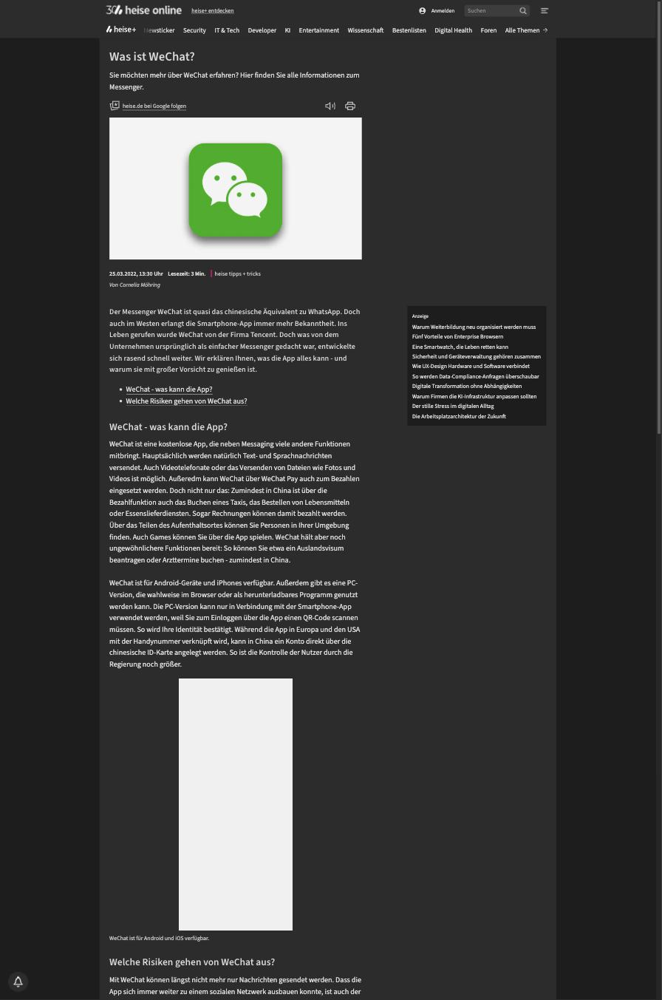
ganze Seite
Super-App „Was ist WeChat?"
heise online, 25. März 2022. Die Aufzählung ist die Folie: Taxi buchen, Lebensmittel bestellen, Essen liefern lassen, Rechnungen bezahlen, Personen in der Umgebung finden, Spiele spielen, Auslandsvisum beantragen, Arzttermine buchen. In China wird das Konto direkt über die chinesische ID-Karte angelegt. Screenshot, heise.de, 11.10.2026 · Titelbild separat Originalseite öffnen ·
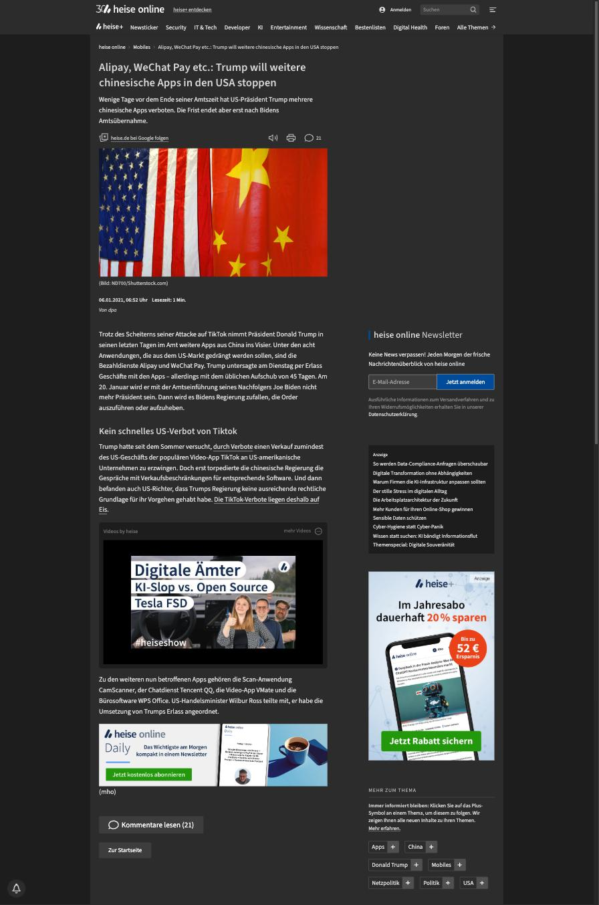
ganze Seite
Super-App „Alipay, WeChat Pay etc.: Trump will weitere chinesische Apps in den USA stoppen"
heise online, 6. Januar 2021. Acht Anwendungen per Erlass untersagt, darunter die Bezahldienste Alipay und WeChat Pay. Das ist derselbe Knopf wie bei Russland und bei Pix — nur in die andere Richtung gedrückt. Screenshot, heise.de, 11.10.2026 · Titelbild separat Originalseite öffnen ·
Satzvorschlag: „In China zahlt niemand mit einer Bezahl-App. Man chattet, und dabei fällt das Bezahlen an."
Die Zahl: Alipay und WeChat Pay decken zusammen über 93 Prozent der mobilen Zahlungen in China. 86 Prozent der erwachsenen Internetnutzer haben beide.
Das Mini-Programm ist der Angriff: Viele Unternehmen in China haben keine Website mehr. Ihr Laden ist eine Mini-App in WeChat. Übertragen auf Engen: Die Bank wird zur Kachel in einer App, die jemand anderem gehört.
Was Europa daraus mitnimmt: Der Weg dorthin führte nicht über ein Gesetz, sondern über den QR-Code und die roten Umschläge zum Neujahrsfest 2015. Gewohnheit schlägt Regulierung.
Und die Kehrseite: Klarnamenpflicht seit 2017, Daten gehen an die Regierung, einzelne Städte testen WeChat als elektronischen Ausweis. Bequemlichkeit und Kontrolle sind dasselbe Produkt.
Ohne Screenshot — zweite Runde
Zwei Seiten ließen sich wieder nicht aufnehmen: orf.at rendert in diesem Chrome-Profil mit eigener Zoomstufe und wird im Screenshot abgeschnitten, das Handelsblatt-Consent-Overlay sitzt in einem iframe, auf den meine Klicks nicht durchkommen.
Hier hat deine Zuhörerschaft selbst gehandelt. Die Volksbanken sind die erste Bankengruppe Europas, die Apple den NFC-Chip abgerungen hat. Das ist kein Vortragsbeispiel von außen. Das ist ihre eigene Geschichte, und sie kennen sie oft selbst nicht.
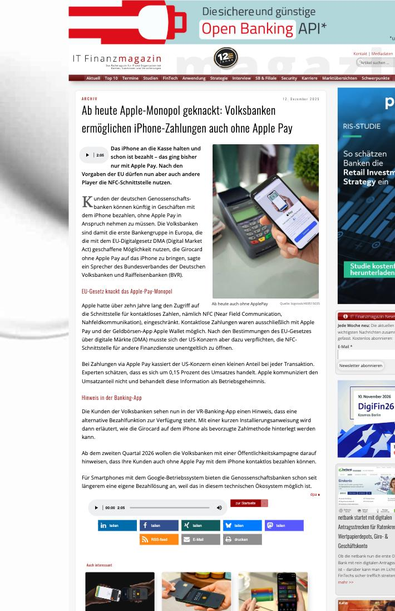
ganze Seite
Apple Pay „Ab heute Apple-Monopol geknackt: Volksbanken ermöglichen iPhone-Zahlungen auch ohne Apple Pay"
IT Finanzmagazin / dpa, 12. Dezember 2025. Vorspann: „Das iPhone an die Kasse halten und schon ist bezahlt — das ging bisher nur mit Apple Pay. Nach den Vorgaben der EU dürfen nun aber auch andere Player die NFC-Schnittstelle nutzen." Die Volksbanken sind laut BVR die erste Bankengruppe in Europa, die die durch den Digital Markets Act geschaffene Möglichkeit nutzt: Girocard aufs iPhone, ohne Apple Pay. Ab dem zweiten Quartal 2026 begleitet eine Öffentlichkeitskampagne in der VR-Banking-App. Screenshot, it-finanzmagazin.de, 11.10.2026 · Titelbild separat Originalseite öffnen ·
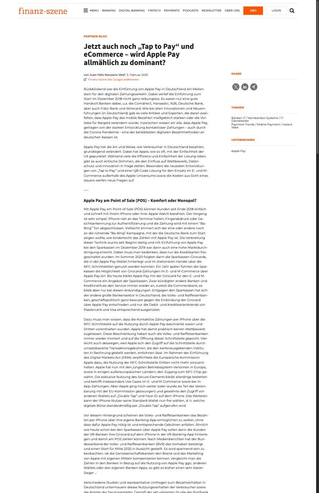
ganze Seite
Apple Pay „Jetzt auch noch ‚Tap to Pay' und eCommerce — wird Apple Pay allmählich zu dominant?"
Finanz-Szene, 3. Februar 2025, von Juan Félix Manzano Vela. Der Text benennt die Entscheidung, die eure Gruppe vor Jahren getroffen hat: „Entgegen den Sparkassen hat sich der andere große Bankensektor in Deutschland, die Volks- und Raiffeisenbanken, geschäftspolitisch ganz bewusst gegen die Einbindung der Girocard über Apple Pay entschieden." Und den Grund, warum: Apple lässt sich den Zugriff auf die Schnittstelle „durch umsatzbasierte Transaktionsgebühren, die den kartenausgebenden Instituten in Rechnung gestellt werden, entlohnen". Screenshot, finanz-szene.de, 11.10.2026 · Titelbild separat Originalseite öffnen ·
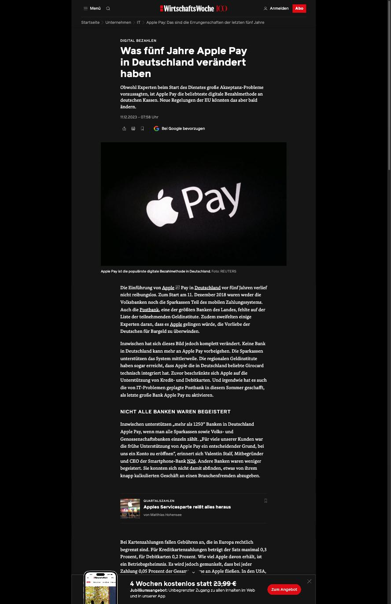
ganze Seite
Apple Pay „Was fünf Jahre Apple Pay in Deutschland verändert haben", Dachzeile „Digital bezahlen"
WirtschaftsWoche, 11. Dezember 2023. Der Satz, der die Folie trägt: „Keine Bank in Deutschland kann mehr an Apple Pay vorbeigehen." Mehr als 1.250 Institute unterstützen den Dienst. Zum Start 2018 war weder eine Volksbank noch eine Sparkasse dabei. Screenshot, wiwo.de, 11.10.2026 · Titelbild separat Originalseite öffnen ·
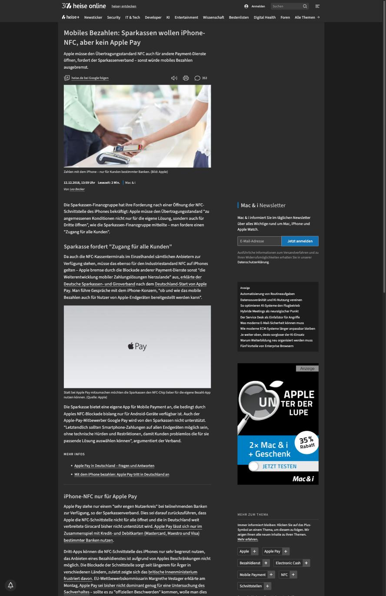
ganze Seite
Apple Pay „Mobiles Bezahlen: Sparkassen wollen iPhone-NFC, aber kein Apple Pay"
heise online / Mac & i, 12. Dezember 2018. Der Anfang des Streits, sieben Jahre vor seinem Ende. Die Sparkassen-Finanzgruppe fordert „Zugang für alle Kunden" und warnt, Apple bremse „die Weiterentwicklung mobiler Zahlungslösungen hierzulande" aus. Screenshot, heise.de, 11.10.2026 · Titelbild separat Originalseite öffnen ·
Satzvorschlag: „Sie haben Apple den Chip abgerungen. Als erste Bankengruppe Europas. Wussten Sie das?"
Der Bogen in vier Daten: 2018 fordern die Sparkassen Zugang und werden abgewiesen. 2019 geben sie nach. Die Volksbanken bleiben draußen. 2024 zwingt der DMA Apple zur Öffnung. Dezember 2025 gehen die Volksbanken als Erste ohne Apple Pay aufs iPhone.
Worum es wirklich ging: um die Gebühr. Die Schätzungen gehen auseinander — die WirtschaftsWoche nennt 0,05 Prozent in Europa und 0,15 Prozent in den USA, das IT Finanzmagazin 0,15 Prozent. Apple nennt keine Zahl. Das ist Teil der Methode.
Der Haken, der bleibt: Das Secure Element bleibt Apple vorbehalten, E-Commerce und In-App-Zahlungen sind von der Öffnung ausgenommen, und auf der Apple Watch geht weiter nur Apple Pay. Die Tür ist einen Spalt offen, nicht weit.
Stablecoins — der Angriff auf die Abwicklung
Apple nimmt die Oberfläche, der Dollar-Stablecoin nimmt die Schiene. Beim einen verlierst du den Kunden, beim anderen die Einlage. Zusammen sind sie dein Gedankenexperiment 5.
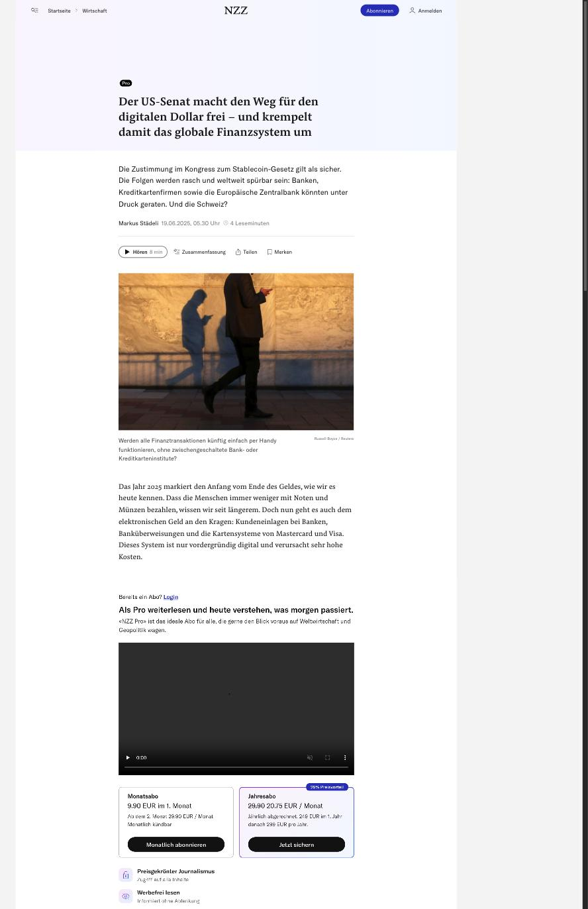
ganze Seite
Stablecoins „Der US-Senat macht den Weg für den digitalen Dollar frei — und krempelt damit das globale Finanzsystem um"
NZZ, 19. Juni 2025, Markus Städeli. Vorspann: „Die Zustimmung im Kongress zum Stablecoin-Gesetz gilt als sicher. Die Folgen werden rasch und weltweit spürbar sein: Banken, Kreditkartenfirmen sowie die Europäische Zentralbank könnten unter Druck geraten." Der erste Satz des Textes ist dein Aufschlag: „Das Jahr 2025 markiert den Anfang vom Ende des Geldes, wie wir es heute kennen." Und weiter: „Doch nun geht es auch dem elektronischen Geld an den Kragen: Kundeneinlagen bei Banken, Banküberweisungen und die Kartensysteme von Mastercard und Visa." Screenshot, nzz.ch, 11.10.2026 · Titelbild separat Originalseite öffnen ·
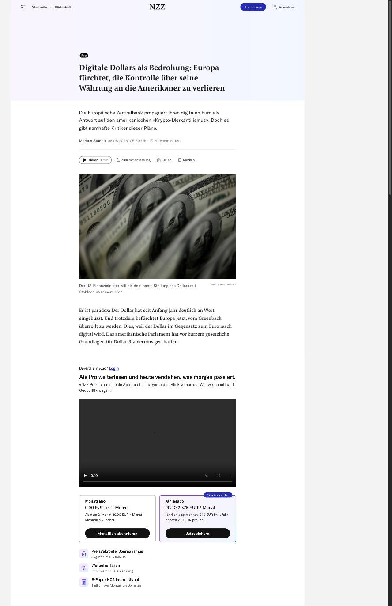
ganze Seite
Stablecoins „Digitale Dollars als Bedrohung: Europa fürchtet, die Kontrolle über seine Währung an die Amerikaner zu verlieren"
NZZ, 8. August 2025. Vorspann: „Die Europäische Zentralbank propagiert ihren digitalen Euro als Antwort auf den amerikanischen «Krypto-Merkantilismus». Doch es gibt namhafte Kritiker dieser Pläne." Bildunterschrift: „Der US-Finanzminister will die dominante Stellung des Dollars mit Stablecoins zementieren." Und das Paradox im Text: Der Dollar hat seit Jahresbeginn deutlich an Wert verloren — und trotzdem fürchtet Europa, von ihm überrollt zu werden. Screenshot, nzz.ch, 11.10.2026 · Titelbild separat Originalseite öffnen ·
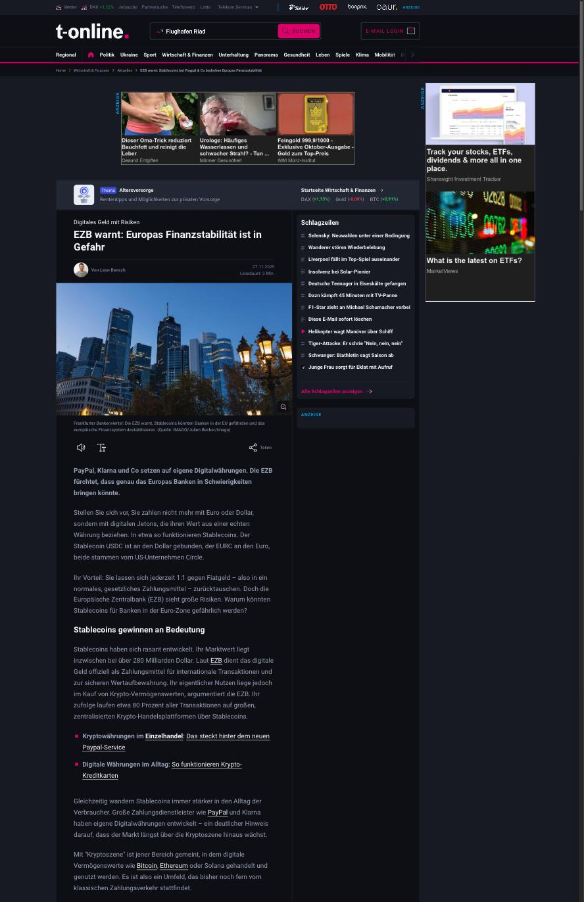
ganze Seite
Stablecoins „EZB warnt: Europas Finanzstabilität ist in Gefahr", Dachzeile „Digitales Geld mit Risiken"
t-online, 27. November 2025. Vorspann: „PayPal, Klarna und Co setzen auf eigene Digitalwährungen. Die EZB fürchtet, dass genau das Europas Banken in Schwierigkeiten bringen könnte." Marktwert über 280 Milliarden Dollar, rund 80 Prozent aller Transaktionen auf den großen zentralisierten Krypto-Handelsplattformen laufen laut EZB über Stablecoins. Screenshot, t-online.de, 11.10.2026 · Titelbild separat Originalseite öffnen ·
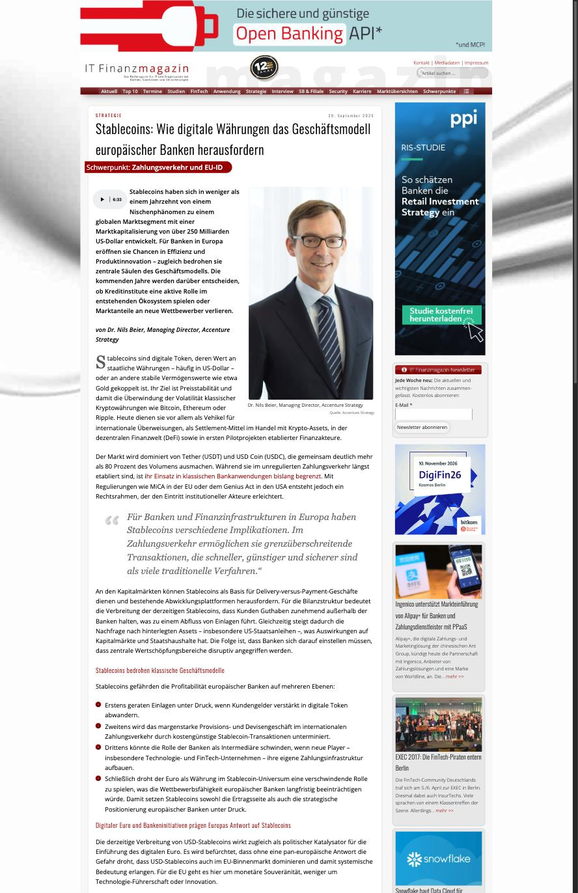
ganze Seite
Stablecoins „Stablecoins: Wie digitale Währungen das Geschäftsmodell europäischer Banken herausfordern"
IT Finanzmagazin, 29. September 2025, von Dr. Nils Beier, Managing Director Accenture Strategy. Die vier Ebenen, auf denen es die Bank trifft, stehen dort als Liste: Einlagen wandern ab, das margenstarke Provisions- und Devisengeschäft wird untergraben, die Rolle als Intermediär schwindet, und der Euro verliert im Stablecoin-Universum an Bedeutung. Screenshot, it-finanzmagazin.de, 11.10.2026 · Titelbild separat Originalseite öffnen ·
Satzvorschlag: „Wenn Ihr Kunde seinen Euro in einen Dollar-Token tauscht, verlieren Sie nicht einen Kunden. Sie verlieren eine Einlage. Und Europa verliert ein Stück Währung."
Die Konzentration: Tether und USD Coin machen zusammen deutlich über 80 Prozent des Volumens aus. Der Markt liegt je nach Zählung zwischen 250 und 300 Milliarden Dollar.
Der Bremsklotz in Europa: MiCA verlangt, dass 60 Prozent der Reserven bei Banken liegen. Tether verzichtet deshalb auf die EU-Lizenz. Die Regel schützt die Banken — und hält den Euro-Stablecoin klein.
Was dagegen spricht: Der Markt stagniert seit einem halben Jahr. Ohne Einlagensicherung bleibt die Nutzung im Alltag gering. Eine Visa-Umfrage vom Oktober 2026 sagt: Mit Schutz auf Bankniveau würden 46 Prozent einsteigen. Ohne nicht.
Der Dreisatz zum Mitschreiben: Apple nimmt die Oberfläche. Der Stablecoin nimmt die Abwicklung. Übrig bleibt die Bilanz — und die Haftung.
Nigeria — was du dort selbst gesehen hast
WKÖ-Zukunftsreise FinTech Lagos, 12.–13.10.2021. Sechs Stationen in zwei Tagen, Unterlagen und rund 70 Fotos liegen im Ordner „2021-10-12 FinTech Lagos Nigeria".
Di 09:00
Impact Hub Lagos, Ikoyi — Osasenaga Enogieru, Commercial Lead
Di 11:30
Flutterwave, Lekki Phase 1 — Mo Bammeke, Global Chief Compliance Officer. Thema „Changing Crossboard Payments in Africa"
Di 13:00
Africa Fintech Foundry (Accelerator der Access Bank), Victoria Island — Daniel Awe
Di 15:30
Endeavor Nigeria, Victoria Island — Tosin Faniro-Dada, CEO
Mi 09:00
Kuda Bank (Digitalbank), Yaba — Nosa Oyegun, Product and Partnerships
Mi 10:30
Paga (Mobile Money) — „A Guide to Mobile Money in Nigeria"
Dazu LSETF, Vibranium Valley und der B2B-Cocktail beim Wirtschaftsdelegierten in Ikoyi.
Warum das trägt: Flutterwave und Paga sind die privaten Rails, die in Nigeria funktionieren. Der staatliche eNaira kommt fünf Jahre später auf unter 1 Prozent. Du warst bei den Gewinnern im Büro, bevor der Verlierer gestartet ist.
Fotos mit dir im Bild liegen jetzt im Unterordner „Fotos Nigeria": IH-59 und IH-55 (du am Mikrofon im Impact Hub), LSETF-21 (im Gespräch), dazu FT-42, Paga-12, Kuda (16) und IH-40 als Gruppen- und Raumbilder.
Kenia fehlt noch. Auffindbar ist nur ein Transkript „2025-08-28 Kenya Konza". Fotos aus Kenia tragen keinen erkennbaren Namen — die musst du mir zeigen oder in der Fotos-Mediathek suchen.
Stimmen 2026 — zugeordnet zu deinen Thesen
Christine Lagarde, EZB-Präsidentin → Thesen 3 und 6
Mai 2026: Der Fall für euro-denominierte Stablecoins sei „far weaker than it appears". Private Stablecoins brächten Fragilität und Fragmentierung in tokenisierte Märkte.
Ihre Warnung vor „digital dollarisation" in Europa und die Aussage, tokenisierte Finanzmärkte könnten ohne Zentralbankgeld nicht skalieren.
Für dich: Die EZB-Chefin argumentiert öffentlich gegen privates Digitalgeld und für den digitalen Euro — bemerkenswerterweise gegen die Linie der Bundesbank. Das ist dein Aufhänger für These 3, und es nimmt dir die Rolle des Mahners ab.
Jamie Dimon, JPMorgan → Thesen 5 und 6
Aktionärsbrief April 2026: „a whole new set of competitors is emerging based on blockchain, which includes stablecoins, smart contracts and other forms of tokenization."
Er fordert, dass Stablecoin-Emittenten, die Zinsen zahlen, wie Banken reguliert werden — mit Eigenkapital, Liquidität und Einlagensicherung.
Satzvorschlag: „Der Chef von JPMorgan zählt Smart Contracts zu seiner Konkurrenz. Das muss ich Ihnen nicht erklären. Das steht in seinem Aktionärsbrief."
Larry Fink, BlackRock → Thesen 1 und 4
WEF 2026: Die Branche müsse die Tokenisierung auf „one common blockchain" bringen.
Jahresbrief 2026: Tokenisierung bringe Finanzanlagen in digitale Wallets; investieren werde dann so einfach „as easily as sending a payment".
Für dich: Fink beschreibt exakt deine These 1 — alles wird wieder zu einem Eintrag in einer Datenbank. Nur nennt er es Tokenisierung und du nennst es Sumerer.
Elon Musk → These 4, Märkte ohne Geld
X Money ist seit 26.06.2026 live für US-Premium-Abonnenten: Wallet, Überweisungen zwischen Nutzern, 6 % Verzinsung auf das Guthaben, Debitkarte mit Cashback. Ausdrücklich kein Bankkonto. Seit September laufen auch die Creator-Auszahlungen von X darüber statt über Stripe.
Im Podcast „People by WTF" sagte Musk sinngemäß, Geld verschwinde als Konzept, sobald KI und Robotik menschliche Bedürfnisse decken, ohne dass Lohn noch Arbeit zuteilen muss.
Für dich die stärkste Pointe des Abends: Deine Picard-Frage von 2019 wird 2026 von Elon Musk beantwortet — und zwar mit Ja. Du hast sie als Gedankenexperiment gestellt, er betreibt inzwischen eine Wallet mit 6 Prozent Zinsen, die keine Bank sein will.
Was andere auf den Bühnen 2026 spielen
Agentic Commerce ist das Thema der Saison. 2025 war das Jahr der Ankündigungen, 2026 das Jahr, in dem Händler sich tatsächlich anschließen. McKinsey erwartet bis 2030 B2C-Umsätze über KI-Agenten von 3 bis 5 Billionen Dollar.
Die Protokolle existieren bereits:
Agentic Commerce Protocol von OpenAI und Stripe, seit September 2025, Checkout direkt in ChatGPT.
Universal Commerce Protocol von Google und Shopify, vorgestellt auf der NRF im Januar 2026.
Alipay AI Pay mit eigenem Trust Protocol für Zahlungen autonomer Agenten in China.
Visa und Akamai mit dem Trusted Agent Protocol, um KI-Einkaufsagenten zu authentifizieren.
Der offene Nerv: Rund drei Viertel der Konsumenten trauen agentischen Plattformen nicht zu, eigenständig zu bezahlen. Genau hier liegt deine Beziehungsfrage — und genau das spielt kaum jemand.
Was auf Bankkonferenzen läuft: digitaler Euro, Stablecoins, tokenisierte Sichteinlagen, PSD3/PSR, Maschine-zu-Maschine-Zahlungen, Betrugsprävention. Thomas Haas etwa hält genau diese Keynote über die Rollen von Zentralbanken, Banken und privaten Akteuren.
Dein Unterschied: Die anderen erklären die Infrastruktur. Du erzählst 5.000 Jahre Geldgeschichte und landest bei der Frage, was Beziehung wert ist. Deine Agenten-These aus dem Konzept — Smart Contracts ersetzen Bank, Anwalt und Regierung — ist 2026 keine Spekulation mehr, sondern hat Protokollnamen. Das ist der Satz, mit dem du den Vortrag aktualisierst.